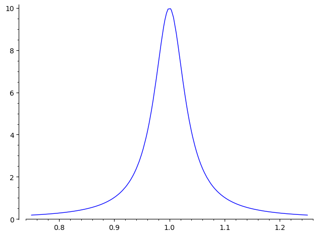
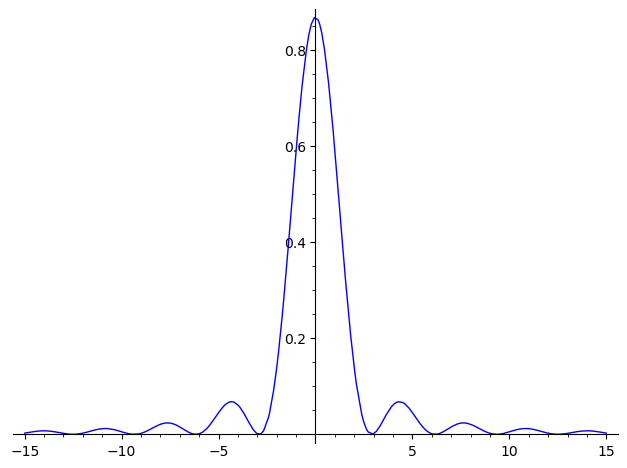
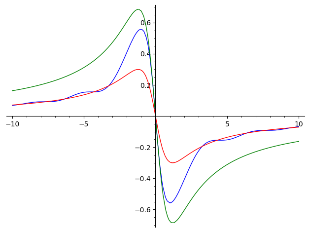
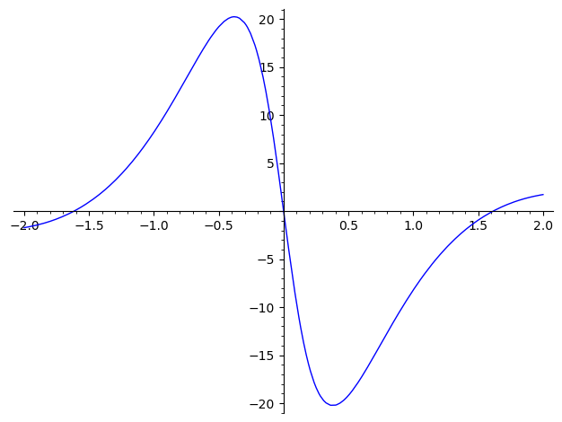

CNOT)CNOT gate)from scipy.constants import physical_constants, pi as pi_numeric from utils import commutator as com from utils_sage import Id, X, Y, Z, H, Rx, Ry, Rz, CX, kron, bra, ket
For circuit drawings (python, not tangled):
from qiskit.circuit import QuantumCircuit, Gate
To simplify calculations we will use unit-less expressions. To do this let \(\tilde{x}\), \(\tilde{p}\), etc denote physical quantities with units and denote the unit-less versions without the tilde, such that e.g.
\[ \tilde{x} = \sqrt{\frac{\hbar}{m\omega}} \; x, \quad \tilde{p} = \sqrt{m\omega\hbar} \; p . \]
Note that this implies \(p=-\ii\partial_x\). The effect on \(H\) and \(a\) is the same as setting \(m=\hbar=\omega=1\) (we have e.g. \(H=p^2/2+x^2/2\)).
In this chapter let us use the python based computer algebra system sage to solve the exercises (some of them). For this reason we define momentum and position operator in code as follows:
R.<x> = QQbar[] W = DifferentialWeylAlgebra(R) (x, dx) = W.gens() p = -i*dx
Having this we can define the Hamiltonian \(H\) of the one-dimensional harmonic oscillator and the corresponding annihilation (\(a\)), and creation operator (\(a^\dagger\)):
H_qho = p^2 / 2 + x^2 / 2 a = (x + i*p) / sqrt(2) ad = (x - i*p) / sqrt(2)
Some basic sanity checks:
assert com(x, p) == i assert com(a, ad) == 1 "PASSED"
'PASSED'
Note that from above we get
\[ \tilde{H} = \hbar\omega H, \quad \tilde{a} = a . \]
For convenience let us also define the number operator \(N=a^\dagger a = H-1/2\). Clearly the number operator has the same eigenstates as \(H\). The corresponding eigenvalues are shifted by \(1/2\).
Let
\[ \ket{0} = \frac{1}{\sqrt{2\pi}} e^{-x^2 / 2} , \]
and
\[ \ket{n} = \frac{(a^\dagger)^n}{\sqrt{n!}} \ket{0} , \]
for \(n\in\{1,2,\ldots\}\). These states form a complete orthonormal set of the Hilbert space \(L^2 (\RR)\) of square integrable functions. Moreover they are eigenstates of \(H\) and \(N\) with \(N\ket{n}=n\ket{n}\).
The book showed that the beamsplitter \(B=e^{\theta(ab^\dagger-a^\dagger b)}\) acts as follows on the dual-rail representation
theta = SR.var('theta', domain='real') B = matrix([[cos(theta), -sin(theta)], [sin(theta), cos(theta)]])
This essentially follows from these commutation relations:
\[ BaB^\dagger = a \cos(\theta) + b \sin(\theta) \quad \text{and} \quad BbB^\dagger = b \cos(\theta) - a \sin(\theta) . \]
I think that (7.66):
\[ H_{\mathrm{atom}}=\hbar\omega_0Z/2 \]
is not correct. The state \(\ket{1}\) (for the atom) is considered (by the book) the "excited" state after absorbtion of a photon. Clearly this should correspond to a higher energy (than that of \(\ket{0}\)) but this is not the case with this Hamiltonian.
One way to resolve the issue is to consider \(\ket{0}\) to the be excited state. I would be definitely confused by this. Another solution might be to replace the Pauli matrices by
\[ X' = XXX = X, Y' = XYX = -Y, \text{ and } Z' = XZX = -Z . \]
These modified Pauli matrices still satisfy the following algebraic identities
\[ X^2 = Y^2 = Z^2 = -\ii XYZ = I \]
Note that these identities essentially characterize the Quaternions (using \(I\in\CC^{2\times2}\) as the unit and \(-\ii\,X\), \(-\ii\,Y\), and \(-\ii\,Z\) as the imaginary units). This is important for the interpretation of the Pauli-rotations as actual rotations in \(\RR^3\).
In particular the commutation relations \([\sigma_i,\sigma_j]=2\ii\epsilon_{ijk}\sigma_k\) hold. I didn't do this conversion in the exercises in part because I was not aware of the error when I started to solve the exercises. But some inconsistencies in the exercises made me suspecting that something is wrong and lead me to the formula for \(H_{\mathrm{atom}}\).
In some of the exercises I just ignore this error. In other exercises I try to circumvent the error by swapping zeros and ones. In any case, if I do not ignore the error I say so within the exercise.
The treatment of the magnetization readout in the book looks a bit odd to me. On the one hand I wonder why in (7.143) only one qubit is involved. On the other hand there is an inconsistency in exercise 7.45. In short: I didn't understand a lot of things.
In the following I present an alternative to the chapters magnetization readout within section 7.7.2, and state tomography within section 7.7.4. It is based on (Jae-Seung Lee, 2002).
Let \(\sigma_k^{-}=(X_k+\ii Y_k)/2\) be the Pauli lowering operator for spin \(k\). For a Hamiltonian \(H\) let \(U(t)=e^{-\ii\,Ht}\) be its evolution operator. Let us write \(U\) for \(U(t)\). The free induction decay signal is given by (for some non-zero constant \(V_0\))
\[ V(t) = V_0 \trace{U\rho U^\dagger \sum_k\sigma_k^-} . \]
The main difference to (7.143) is the sum over all spins. Using cyclicity property of traces we get
\[ V(t) = V_0 \trace{\rho \cdot \underbrace{U^\dagger \sum_k\sigma_k^- U}_{=:A}} . \]
Let us consider the single-spin case now. In this case the system Hamiltonian is \(H=\frac{\omega}{2}Z\). Using the following sage code …
w, t = SR.var('ω t', domain='real') U1 = matrix.diagonal([exp(-i*w*t/2), exp(+i*w*t/2)]) sm = (X + i*Y) / 2 sp = (X - i*Y) / 2
… it is easy to find a formula for \(A\):
assert U1.H * sm * U1 == e^(I*t*w) * sm "PASSED"
'PASSED'
That is (for \(H=\frac{\omega}{2}Z\)):
\[ U^\dagger \sigma^- U = e^{\ii \omega t} \sigma^- . \]
Hence for the single spin case we have the following signal
\[ V_1(t) = V_0 \trace{\rho\sigma^-} e^{\ii \omega t} . \]
This also explains why this signal is Fourier transformed. In fact, the fourier transform would be a delta distribution at \(\omega\). For actual measurements one would expect a sharp peak at \(\omega\). Unfortunately I didn't get this valuable insight from the book.
How do we use this formula to obtain \(\rho\)? Recall that any mixed state can be represented as
\[ \rho = \frac{1}{2} I + r_x X + r_y Y + r_z Z \]
for some real vector \(\vec{r}=(r_x,r_y,r_z)\) with \(\norm{\vec{r}}\leq1\) (the state is pure if the norm is exactly one). The task is to determine \(\vec{r}\). Plugging this into the formula above and using the orthogonality of the Pauli matrices with respect to the scalar product \(A,B\mapsto\trace{A^\dagger\cdot\,B}\) we get
\[ V_1(t) = V_0 (r_x + \ii r_y) e^{\ii\omega t} . \]
Pretending that we know \(V_0\) this is enough to obtain \(r_x\) and \(r_y\). How do we obtain \(r_z\)? This can be accomplished by evolving \(\rho\) by \(R_x\) or \(R_y\), that is, an RF pulse by 90 degrees around X or Y. For a unitary \(M\) let us define
\[ V^M(t) = V_0 \trace{U M\rho M^\dagger U^\dagger \sum_k\sigma_k^-} . \]
Hence
\[ V_1^M(t) = V_0 \trace{(M \rho M^\dagger) \sigma^-} e^{\ii \omega t} . \]
Note that
\[ R_x X R_x^\dagger = X, \quad R_x Y R_x^\dagger = Z, \quad R_x Z R_x^\dagger = -Y , \]
and
\[ R_y X R_y^\dagger = -Z, \quad R_y Y R_y^\dagger = Y, \quad R_y Z R_y^\dagger = X . \]
Hence
\begin{align*} V_1^{I}(t) &= (r_x + \ii r_y) e^{\ii\omega t} , \\ V_1^{R_x}(t) &= (r_x - \ii r_z) e^{\ii\omega t} , \\ V_1^{R_y}(t) &= (r_z + \ii r_y) e^{\ii\omega t} . \end{align*}We see that two of the three experiments corresponding to \(\{I,R_x,R_y\}\) are sufficient to determine \(\rho\) via state tomography.
Using the fact that \(x\) and \(p\) do not commute, and that in fact \([x,p]=\ii\,\hbar\), explicitly show that \(a^\dagger\,a=H/\hbar\omega-1/2\).
This is just boring algebra which can be done much faster (and more reliably) by sage:
assert ad * a == H_qho - 1/2 "PASSED"
'PASSED'
Given that \([x,p]=\ii\,\hbar\), compute \([a,a^\dagger]\).
The unitless result is \(1\):
com(a, ad)
1
Since the creator/annihilator is already unit-less the same is true with units.
Compute \([H,a]\) and use the result to show that if \(\ket{\psi}\) is an eigenstate of \(H\) with energy \(E\geq n\hbar\omega\), then \(a^n\ket{\psi}\) is an eigenstate with energy \(E-n\hbar\omega\).
Using \([a^\dagger,a]=-[a,a^\dagger]=-1\) (see exercise 7.2) we deduce (assuming unit-less quantities)
\[ [H,a] = [a^\dagger a, a] = (a^\dagger a - a a^\dagger) a = [a^\dagger,a] a = -a . \]
Using this we get
\begin{align*} H a^n \ket{\psi} &= (Ha) a^{n-1} \ket{\psi} \\ &= ([H,a] + aH)a^{n-1} \ket{\psi} \\ &= (-a^n + a H a^{n-1}) \ket{\psi} \\ &= a H a^{n-1} \ket{\psi} - a^n \ket{\psi} . \end{align*}Recall that we want to show that \(Ha^n\ket{\psi}=(E-n)a^n\ket{\psi}\) for all natural numbers \(n\leq E\). Using the above calculation we can prove this by induction. In fact, for \(n=0\) the assertion is trivial. For \(n>0\) we may use the above calculation together with the assertion for \(n-1\):
\[ H a^n \ket{\psi} = a(E-n+1)a^{n-1}\ket{\psi} - a^n \ket{\psi} = (E-n)a^n\ket{\psi} . \]
QED.
Show that \(\ket{n}=\frac{(a^\dagger)^n}{\sqrt{n!}}\ket{0}\).
The exercise statement is rather "vague" (I try to be friendly here 😉), so let us prove some definite statement like the theorem about the spectrum of the harmonic oscillator instead.
To find the ground state consider
\[ \bra{\phi} N \ket{\phi} = \norm{a\phi}^2 \geq 0 . \]
Equality holds iff
\[ x \phi(x) + \phi'(x) = \sqrt{2} \cdot (a\phi)(x) = 0 . \]
This is a linear ordinary differential equation. One solution is given by \(x\mapsto\exp(-x^2/2)\), which can be easily checked by plugging this in. We do not need this fact (since it follows automatically later on) but the solution is unique up to a scalar factor, which can be seen by observing that the ODE is equivalent to \(\partial_x\log(\phi(x))=-x\).
The factor \(1/\sqrt{2\pi}\) in the definition of \(\ket{0}\) ensures normalization. We thus proved \(N\ket{0}=0\). Next let us verify that \(\ket{n}\) is an eigenvector. To simplify the notation let us define \(\ket{n'}:=\sqrt{n!}\ket{n}\).
\[ N\ket{n'} = a^\dagger a (a^\dagger)^n \ket{0} . \]
By using \([a,a^\dagger]=1\) (exercise 7.2) we may move the single \(a\) to the right and then use \(a\ket{0}=0\) (this procedure is just simple example of mathematical induction). This leads to
\[ N\ket{n'} = n (a^\dagger)^n \ket{0} = n \ket{n'} , \]
hence establishing that \(\ket{n'}\) (and \(\ket{n}\)) is an eigenvector for the eigenvalue \(n\). To see that the \(1/\sqrt{n!}\) in the definition of \(\ket{n}\) is indeed the right normalization factor use the freshly proved equality \(N\ket{n'}=n\ket{n'}\) and consider (don't forget \([a,a^\dagger]=1\))
\[ \norm{(n+1)'}^2 = \bra{n'} a a^\dagger \ket{n'} = \bra{n'} N + 1 \ket{n'} = (n+1) \norm{n'}^2 . \]
Hence, since \(\ket{0}\) is already normalized mathematical induction shows that \(\ket{n}\) is normalized too.
It remains to show that the \((\ket{n})\) generate the whole Hilbert space (completeness), since orthogonality already follows from the fact that they are eigenstates to different eigenvalues of some (unbounded) self-adjoint operator. This essentially boils down to show that finite linear combinations of the eigenstates are dense in \(L^2(\RR)\).
We only sketch the proof since this reaches out to other parts of mathematics. First of all observe that
\[ \ket{n}(x) = \frac{1}{\sqrt{2\pi}} \; p_n(x) \; e^{-x^2/2} , \]
where the \(p_n(x)\) are polynomials which satisfy the recursive relation
\[ p_{n+1}(x)=(2x+\partial_x)p_n(x), \quad p_0(x) = 1 . \]
These are the well-known hermite polynomials. From the recursive relation we directly see (inductively) the for our purpose important property that \(p_n\) has degree \(n\) (with leading factor \(2^n\)). The density now follows from the following well known results
By 2 finite linear combinations of eigenstates can approximate any compactly supported continuous function. Here it is important that any degree is represented among the eigenstates. It should be obvious that the factor \(e^{-x^2/2}\) does not disturb this argument at all. Now completeness directly follows from 1. QED.
Verify that Equations (7.11) and (7.12) are consistent with (7.10) and the normalization condition \(\norm{\ket{n}}^2=1\).
It is not hard to see that (7.11) and (7.12) imply (7.10):
\[ a^\dagger a \ket{n} = a^\dagger \sqrt{n} \ket{n-1} = n \ket{n} . \]
The normalization condition is not relevant here. So it is indeed true that it is consistent with the three equations but for trivial reasons.
Prove that a coherent state is an eigenstate of the photon annihilation operator, that is, show \(a\ket{\alpha}=\lambda\ket{\alpha}\) for some constant \(\lambda\).
Recall that \(a\ket{n}=\sqrt{n}\ket{n-1}\) for \(n\geq1\) and \(a\ket{0}=0\). Hence
\[ a\ket{\alpha} = e^{-\abs{\alpha}/2} \sum_n \frac{\alpha^n}{\sqrt{n}} \, a \, \ket{n} = e^{-\abs{\alpha}/2} \sum_n \frac{\alpha^{n+1}}{\sqrt{n}} \ket{n} = \alpha \ket{\alpha} . \]
The claim follows with \(\lambda=\alpha\). QED.
Show that the circuit below transforms a dual-rail state by
\[ \ket{\psi_{\mathrm{out}}} = \begin{bmatrix} e^{\ii\pi} & 0 \\ 0 & 1 \end{bmatrix} \ket{\psi_{\mathrm{in}}} . \]
if we take the top wire to represent the \(\ket{01}\) mode, and \(\ket{10}\) the bottom mode, and the boxed \(\pi\) to represent a phase shift by \(\pi\).
By definition the circuit acts like this (we use \(e^{\ii\pi}=-1\) to simplify notation):
\[ \ket{0_L} = \ket{01} \mapsto -\ket{0_L}, \quad \ket{1_L} = \ket{10} \mapsto \ket{1_L}. \]
The matrix representing this linear transformation with respect to the basis \((\ket{0_L},\ket{1_L})\) (the order is important) is
\begin{bmatrix} -1 & 0 \\ 0 & 1 \end{bmatrix}as desired.
Show that \(P\ket{\alpha}=\ket{\alpha e^{\ii\Delta}}\) where \(\ket{\alpha}\) is a coherent state (note that, in general, \(\alpha\) is a complex number!).
The phase shift operator is given by \(P\ket{n}=e^{\ii n\Delta}\ket{n}\). Hence, using \(\abs{e^{\ii\Delta}}=1\)
\[ P\ket{\alpha} = e^{-\abs{\alpha}^2/2} \sum_n \frac{\alpha^n \, e^{\ii n\Delta}}{\sqrt{n!}} \ket{n} = \ket{\alpha e^{\ii\Delta}} . \]
QED.
Show that the following circuit acts as a Hadamard gate on dual-rail single photon states, that is, \(\ket{01}\mapsto(\ket{01}+\ket{10})/\sqrt{2}\) and \(\ket{10}\mapsto(\ket{01}-\ket{10})/\sqrt{2}\) up to an overall phase.
Assuming evolution from left to right the circuit implements \(ZB_{\theta=\pi/4}\) (note that the phase shift is \(Z\) up to a global phase). Below you can see that then the assertion of the exercise is wrong. We give two alternatives instead.
B0 = B.subs(theta=pi/4) B1 = B.subs(theta=-pi/4) # This shows that the original circuit does not implement H, not even if we neglect a # global phase f"sqrt(2)*H != {sqrt(2) * Z * B0}" # These alternatives implement the Hadamard gate: assert B0 * Z == H assert Z * B1 == H "PASSED"
'sqrt(2)*H != [ 1 -1]\n[-1 -1]' 'PASSED'
Interferometers are optical tools used to measure small phase shifts, which are constructed from two beamsplitters. Their basic principle of operation can be understood by this simple exercise.
Note that this circuit performs the identity operation:
\[ B_{\theta=\pi/4}^\dagger \cdot B_{\theta=\pi/4} \]
Compute the rotation operation (on dual-rail states) which this circuit performs, as a function of the phase shift \(\varphi\):
\[ B_{\theta=\pi/4}^\dagger \cdot R_z(-\varphi) \cdot B_{\theta=\pi/4} \]
Recall that we have \(B=B(\theta)=R_y(2\theta)\). Hence \(B_{\theta=\pi/4}\) is a rotation around the y-axis by ninety degrees. This maps the x-axis onto the reversed z-axsis. Hence the (reversed) z-rotation in the middle effectively acts like a rotation around the x-axis by an angle \(+\varphi\). The net result is \(R_x(\varphi)\).
Such reasoning easily leads to subtle errors. Therefore let us verify this using sagemath:
B0 = B.subs(theta=pi/4) phi = SR.var('phi', domain='real') assert B0.H * Rz.subs(theta=-phi) * B0 == Rx.subs(theta=phi) "PASSED"
'PASSED'
It worked out 😎!
What is \(B\ket{2,0}\) for \(\theta=\pi/4\)?
Following the book we basically identify states with products of creation operators and then use the commutation relations for the beamsplitter and \(B\ket{0,0}=\ket{0,0}\):
\[ B\ket{2,0} = \frac{1}{\sqrt{2}} B (a^\dagger)^2 \ket{0,0} = \frac{1}{\sqrt{2}} \left(a^\dagger \cos(\theta) + b^\dagger \sin(\theta) \right)^2 \ket{0,0} . \]
Now it helps that \(a^\dagger\) and \(b^\dagger\) commute, which implies
\[ \left(a^\dagger \cos(\theta) + b^\dagger \sin(\theta) \right)^2 = (a^\dagger)^2 \cos(\theta)^2 + (b^\dagger)^2 \sin(\theta)^2 + 2a^\dagger b^\dagger \sin(\theta)\cos(\theta) . \]
Using \(2\sin(x)\cos(x)=\sin(2x)\) we obtain:
\[ B\ket{2,0} = \cos(\theta)^2 \ket{2,0} + \sin(\theta)^2 \ket{0,2} + \frac{\sin(2\theta)}{\sqrt{2}} \ket{1,1} . \]
Plugging in \(\theta=\pi/4\) we obtain
\[ B_{\theta=\pi/4} \ket{2,0} = \frac{1}{2} \ket{2,0} + \frac{1}{2} \ket{0,2} + \frac{1}{\sqrt{2}} \ket{1,1} \]
What is \(B\ket{\alpha,\beta}\) where \(\ket{\alpha}\) and \(\ket{\beta}\) are two coherent states as in Equation (7.16)? (Hint: recall that \(\ket{n}=\frac{(a^\dagger)^n}{\sqrt{n!}}\ket{0}\).)
Observe that
\[ \ket{\alpha} = e^{-\abs{\alpha}^2/2} \sum_n \frac{\alpha^n}{\sqrt{n!}} \ket{n} = e^{\alpha a^\dagger - \abs{\alpha}^2/2} \ket{0} . \]
There is one subtle thing to note here. The operator \((a^\dagger)\) is neither bounded nor normal. So it is not clear if \(e^{\alpha a^\dagger}\) is well defined as an operator.
Let us give a sketch of how one might make the exponential function rigorous. Let us define the (large) Hilbert space spanned by the \(\ket{n}\) but with scalar product (implicitly) defined by \(\sprod{n}{n}_1=(n!)\inv\). With respect to this Hilbert space \(a^\dagger\) is bounded. Hence we can define \(e^{\alpha a^\dagger}\) by the usual exponential series (we need the space for convergence).
Another way to deal with the problem is to just see it as an abbreviation. In fact, we only ever apply such operators to \(\ket{0,0}\).
In the following let us abreviate \(K=e^{-(\abs{\alpha}^2+\abs{\beta}^2)/2}\), \(c=\cos(\theta)\), and \(s=\sin(\theta)\). Now let us go on with the calculation:
\begin{align*} B \ket{\alpha,\beta} &= K B e^{\alpha a^\dagger + \beta b^\dagger} \ket{0,0} \\ &= K B e^{\alpha a^\dagger + \beta b^\dagger} B^\dagger B \ket{0,0} \\ &= K \exp(\alpha B a^\dagger B^\dagger + \beta B b^\dagger B^\dagger) \ket{0,0} \\ &= K \exp(\alpha[ca^\dagger + sb^\dagger] + \beta[cb^\dagger-sa^\dagger]) \ket{0,0} \\ &= K \exp((\alpha c - \beta s)a^\dagger + (\alpha s + \beta c)b^\dagger) \ket{0,0} \\ & = \ket{\alpha c - \beta s, \alpha s + \beta c} . \end{align*}Hence the operation of \(B\) on coherent states is again given by a rotation matrix:
\[ B: \begin{pmatrix} \alpha \\ \beta \end{pmatrix} \mapsto \begin{bmatrix} c & -s \\ s & c \end{bmatrix} \begin{pmatrix} \alpha \\ \beta \end{pmatrix} . \]
In Section 1.4.4 (page 34), we described a quantum circuit for solving the one-bit Deutsch–Jozsa problem. Here is a version of that circuit for single photon states (in the dual-rail representation), using beamsplitters, phase shifters, and nonlinear Kerr media:
The book contains a drawing of the circuit at this place.
Recall that \(U_f\) implements the following operation on the logical qubits:
\[ U_f \ket{x,y} = \ket{x,y\oplus f(x)} . \]
Recall from box 7.4 that the optical Fredkin gate
\[ \exp\left(\frac{\pi}{2} c^\dagger c (a^\dagger b - b^\dagger a)\right) \]
can be used two implement two different logical gates:
CX gate in the dual-rail representation.CSWAP (the actual Fredkin gate) if operating directly on the physical qubits.There are four possible functions (two constant, two balanced). Let us sketch how to implement each of them.
\[ f_1(x) = 0, \quad f_2(x) = 1, \quad f_3(x) = x, \quad f_4(x) = \neg x . \]
X on the second rail. This in turn can be
implemented by a CX and an ancilla initialized to 1. We can use the optical Fredkin
gate in the dual-rail representation as mentioned above to do the CX.CX which directly be implemented by the optical Fredkin gate in
the dual rail representation.CX conjugated by X in the control. Both types of gates
can be implemented as shown above.So overall, we could do this with the optical Fredkin gate alone!
That \(U_f\) can be implemented without phase shifts should be clear since controlled X
gates (this is what the optical Fredkin does on the dual-rail represenation as we have
just seen) are sufficient to implement any boolean function.
So let us turn to the question "why" no phase shifts are needed in the rest of the circuit. More precisely we show that the circuit leads to the same measurement statistics as the Deutsch-Josza algorithm (and so is identical for all practical purposes). The circuit implements
\[ B^\dagger \otimes I \cdot U_f \cdot B \otimes B . \]
The original Deutsch-Josza algorithm is the same, but with \(B\) replaced by \(H\). The initial state \(\ket{01_L}\) is the same. But recall that \(B=B_{\theta=\pi/4}=HZ\). The \(Z\) would be implemented by a phase shift. But we actually do not need them since in this particular setting at the intial state they just produce a global phase \(-1\) and at the final state it does not matter since we measure in the computational base anyway).
Not sure what this exercise even means. If it means to show that the circuit actually implements the Deutsch-Josza algorithm: then this was done in the solution to 2.
No it does not work with coherent states. No matter how the measurement outcome is interpreted there is always a non-zero chance of failure for some \(f\) (recall that the Deutsch-Josza algorithm is one of a few quantum algorithms with a 100% success probability).
To see this consider the constructions of \(U_f\) from part 1 (we need to look at a particular implemenation since the action on coherent states might be different for different implementation). We only look at the cases \(f(x)=0\) (constant) and \(f(x)=x\) (balanced).
Let us assume that the intial state is \(\ket{\alpha,\beta,\gamma,\delta}\). Let us abbreviate \(\phi_{\pm}=(\gamma\pm\delta)/\sqrt{2}\). In the constant case the final state is (see exercise 7.12 for the action of beamsplitters on coherent states)
\[ \ket{\alpha, \beta, \phi_-, \phi_+} , \]
In the balanced case, in addition there is also an optical Fredkin gate applied a, b
with control at d. In this case the final state is:
\[ e^{\frac{\pi}{2} d^\dagger d(a^\dagger b - ab^\dagger)} \ket{\alpha,\beta,\phi_-,\phi_+} = e^{-\abs{\phi_+}^2/2} \sum_n \frac{\phi_+^n}{\sqrt{n!}} e^{\frac{\pi n}{2}(a^\dagger b - ab^\dagger)} \ket{\alpha,\beta,\phi_-,n} . \]
Note that the Fredkin gate acts as a controlled beamsplitter, and for this particular angle we have
\[ e^{\frac{\pi n}{2}(a^\dagger b - ab^\dagger)} \ket{\alpha,\beta,\phi_-,n} = \begin{cases} \ket{\alpha,\beta,\phi_-,n} & \text{for } n \text{ even,} \\ \ket{-\beta,\alpha,\phi_-,n} & \text{for } n \text{ odd.} \end{cases} \]
Note that there is always a non-zero probability that \(n=0\) (even) is measured in \(d\). In that case the measurement statistics for the other three rails is the same as for the constant case. In particular there are measurement results which match both, the constant and the balanced case. Hence an exact algorithm with 100% success probability is not possible. QED.
To see that the expected classical behavior of a Kerr medium is obtained from the definition of \(K\), Equation (7.41), apply it to two modes, one with a coherent state and the other in state \(\ket{n}\); that is, show that
\[ K \ket{\alpha}\ket{n} = \ket{\alpha e^{\ii\chi Ln}}\ket{n} . \]
Use this to compute
\begin{align*} \rho_a &= \ptrace{b}{K\ket{\alpha}\ket{\beta}\bra{\beta}\bra{\alpha} K^\dagger} \\ &= e^{-\abs{\beta}^2} \sum_m \frac{\abs{\beta}^{2m}}{m!} \proj{\alpha e^{\ii\chi Lm}} . \end{align*}and show that the main contribution to the sum is for \(m=\abs{\beta}^2\).
Let us abbreviate \(\xi=\chi L\) and \(J=a^\dagger ab^\dagger b\). We have
\[ \ket{\alpha}\ket{n} = e^{-\abs{\alpha}^2/2} \, (b^\dagger)^n \, e^{\alpha a^\dagger} \ket{0,0} . \]
Hence we are interested to compute
\[ K (b^\dagger)^n \, e^{\alpha a^\dagger} K^\dagger = K (b^\dagger)^n K^\dagger \, e^{\alpha K a^\dagger K^\dagger} . \]
By the CBH formula we have
\[ K a^\dagger K^\dagger = \sum_n \frac{(\ii\xi)^n}{n!} [(J)^n,a^\dagger] . \]
For that reason let us look at
\[ [J,a^\dagger] = [a^\dagger a, a^\dagger] b^\dagger b = a^\dagger [a, a^\dagger] b^\dagger b = a^\dagger b^\dagger b . \]
Hence the iterated commutator is \([(J)^n,a^\dagger]=a^\dagger(b^\dagger b)^n\). Let \(P_b=e^{\ii\xi\,b^\dagger\,b}\). Then
\[ K a^\dagger K^\dagger = a^\dagger P_b . \]
Similarly
\[ K b^\dagger K^\dagger = b^\dagger P_a . \]
Therefore
\[ K (b^\dagger)^n \, e^{\alpha a^\dagger} K^\dagger = (b^\dagger)^n P_a^n \, e^{\alpha a^\dagger P_b} . \]
Finally, using \(P_a^n\ket{k}=e^{\ii\xi\,nk}\ket{k}\), we obtain
\[ K \ket{\alpha} \ket{n} = e^{-\abs{\alpha}^2/2} (b^\dagger)^n P_a^n \, e^{\alpha a^\dagger P_b} \ket{0,0} = e^{-\abs{\alpha}^2/2} (b^\dagger)^n \, e^{\alpha e^{\ii\xi\,n} a^\dagger} \ket{0,0} = \ket{\alpha e^{\ii\xi\,n}} \ket{n} . \]
QED.
Using the first part we get
\begin{align*} \rho_b &= \sum_{mn} \ptrace{b}{K \ket{\alpha} \frac{\beta^{m+n}}{\sqrt{m!n!}} \ket{m}\bra{n} \bra{\alpha} K^\dagger} \\ &= \sum_{mn} \ptrace{b}{\ket{\alpha e^{\ii\xi\,m}} \frac{\beta^{m+n}}{\sqrt{m!n!}} \ket{m}\bra{n} \bra{\alpha e^{\ii\xi\,n}}} \\ &= \sum_{m} \frac{\beta^{2m}}{m!} \proj{\alpha e^{\ii\xi\,m}} . \end{align*}To show the final claim consider the function
\[ g(m) = \log(b^{2m}/m!) . \]
For simplicity let us assume \(\beta\geq0\) (to avoid writing \(\abs{\beta}\) all the time). We have to find the maximum of \(g\). I put the logarithm there to simplify differentiating this function. By Stirlings formula we have
\[ g(m) \approx m (1 + 2\log{\beta} - \log{m}) . \]
The derivative is \(g'(m)=2\log{\beta}-\log{m}\). This is zero iff \(m=\beta^2\). Hence the biggest contribution to \(\rho_b\) comes from a state close to \(\ket{\alpha\,e^{\ii\xi\abs{\beta}^2}}\). QED.
Plot (7.55):
\[ P_{\mathrm{cav}}/P_{\mathrm{in}} = \frac{1 - R_1}{\abs{1 + e^{\ii\varphi}\sqrt{R_1R_2}}^2} \]
as a function of field detuning \(\varphi\), for \(R_1=R_2=0.9\).
Here is the code to make the plot in sage:
R1, R2 = SR.var('R1 R2', domain='positive') phi = SR.var('phi', domain='real') power = (1 - R1) / abs(1 + exp(i*phi)*sqrt(R1*R2))**2 def make_plot_ex715(r1, r2=None, interval=(0, 2), **kwargs): """Plot P_cav/P_in according to exercise 7.15 but with s=phi/pi on the x-axis.""" s = SR.var('s', domain='real') return parametric_plot((s, power.subs(phi=pi*s, R1=r1, R2=r2 or r1)), (s,) + interval, **kwargs)
You can use it like so:
show(make_plot_ex715(0.9, interval=(0.5, 1.5), aspect_ratio='automatic'))

Figure 1: Fabry-Perot cavity, relative power \(P_{\mathrm{cav}}/P_{\mathrm{in}}\) inside cavity vs \(\varphi/\pi\).
As we can see \(P_{\mathrm{cav}}/P_{\mathrm{in}}\) is maximal at \(\varphi=\pi\) with value \((1-R)^{-1}=10\). Let us also note that at \(\varphi=0\) and \(\varphi=2\pi\) the value is roughly \((1-R_1)/4\) if \(R_1,R_2\approx1\). Moreover the width of the central peak is around \(R_1\inv\) as can be easily verified by plugging in the Taylor expansion of \(e^{\ii\varphi}\) at \(\varphi=\pi\) into the formula for \(P_{\mathrm{cav}}/P_{\mathrm{in}}\).
Show that (7.60):
\[ \int Y_{l_1m_1}^* Y_{1,\pm1} Y_{l_2m_2} \dd \Omega \]
is non-zero only when \(m_2-m_1=\pm1\) and \(\Delta\,l=\pm1\).
More precisely: Let \(a\in\{+1,-1\}\) and replace the middle function by \(Y_{1a}\). Then the integral does not vanish if and only if
\[ m_2 - m_1 = a \text{ and } \abs{l_2-l_1} = 1 . \]
That is, the sign of \(\Delta\,m\) does depend on which of the two \(Y_{1,\pm1}\) is chosen but the sign of \(\Delta\,l\) does not.
All relevant functions involve relatively complicated constant factors. Since we are only interested in the question whether the integral is non-zero or not, let us introduce a specific notation for this exercise: We write \(a\sim b\) if \(a=cb\) for some non-zero and constant \(c\). By constant I mean that \(c\) does not depend on \(\theta\) or \(\varphi\) (the variables we integrate over).
Let \(a=\pm1\) and note that \(Y_{1,a}\sim\sin(\theta)e^{a\ii\varphi}\). By \(\dd\Omega=\sin(\theta)\dd\theta\dd\varphi\) the definition of the spherical harmonics in terms of the associated Legendre polynomials we have:
\begin{align*} \int Y_{l_1m_1}^* Y_{1,\pm1} Y_{l_2m_2} \dd \Omega &\sim \int_0^{\pi} \int_0^{2\pi} Y_{l_1m_1}^* Y_{l_2m_2} \sin(\theta)^2 e^{a\ii\varphi} \dd\varphi\dd\theta \\ &\sim \int_{-1}^{+1} \int_{0}^{2\pi} P_{l_1m_1}^*(x) P_{l_2m_2}(x) \sqrt{1-x^2} e^{\ii\varphi(m_2-m_1+a)} \dd\varphi \dd x \\ &\sim: I_1 . \end{align*}The integral over \(\varphi\) vanishes iff \(m_1=m_2+a\). This already proves the first part of the exercise. Let \(b=(a+1)/2\). The question now translates to the task to find out when the following integral vanishes:
\[ I_1 \sim I_2 := \int_{-1}^{+1} (1-x^2)^{m_2+b} \partial_x^{m_2+a+l_1} (x^2-1)^{l_1} \partial_x^{m_2+l_2} (x^2-1)^{l_2} \dd x . \]
Let us rewrite this in terms of the "normal" Legendre polynomials \(P_l(x)\sim\partial_x^l(x^2-1)^l\):
\[ I_2 \sim I_3(b) := \int_{-1}^{+1} (1-x^2)^{m_2+b} \partial_x^{m_2+a} P_{l_1}(x) \cdot \partial_x^{m_2} P_{l_2}(x) \dd x . \]
Let us define the differential operator \(D_n=\partial_x^n(1-x^2)^n\partial_x^n\). Moreover, write \(\tilde{P}_l(x)\sim\partial_x^{l-1}(x^2-1)^l\) (this is the Legendre polynomial of order \(l\) for \(l\,>\,0\) where one derivative was "stolen"). Integration by parts \(m_2+b\) times (in one or in the other direction) yields:
\[ I_3(b=0) \sim \int_{-1}^{+1} \tilde{P}_{l_1}(x) \cdot D_{m_2} P_{l_2}(x) \dd x . \]
assuming \(l_1\neq0\), and
\[ I_3(b=1) \sim \int_{-1}^{+1} D_{m_2+1} P_{l_1}(x) \cdot \tilde{P}_{l_2}(x) \dd x . \]
assuming \(l_2\neq1\).
As said these formulas are only valid for \(l_1\neq0\) or \(l_2\neq0\) respectively. This however is not a big issue since these special cases are very simple. Let us briefly consider the case \(b=l_1=0\). It follows that \(m_1=0\) and hence \(m_2=m_1+1=1\) and \(l_2\geq1\). Hence the integral simplifies to \(\int(1-x^2)\partial_x\,P_{l_2}(x)\dd\,x\). Using integration by parts (once) we see that this is only ever non-zero if \(l_2=1\), proving the claim for this special case (we use that \(P_1(x)\sim\,x\) and take the orthogonality relations for the Legendre polynomials for granted). The case \(b=1\) is similar.
Let us come back to the above formulas for \(b=0\) and \(b=1\). We have the following
\(P_l\) is an eigenfunction of \(D_n\). More precisely \(D_nP_l=\lambda_{nl}P_l\) where
\[ \lambda_{nl} = \prod_{j=0}^{n-1} \left( j(j+1) - l(l+1) \right) . \]
Before we prove the Lemma let us see why this helps us. We only have to consider the case \(b=0\) since the other case is the same. Using the lemma we see that
\[ I_3(b=0) \sim \int_{-1}^{+1} \tilde{P}_{l_1}(x) \cdot P_{l_2}(x) \dd x . \]
Recall that the Legendre polynomial form an orthogonal (and complete) set of functions of the Hilbert space \(L^2(-1,+1)\). We will show that the above "skewed" version of the scalar product is non-zero iff \(\abs{l_1-l_2}=1\) (yes there are two values of \(l_2\) for each \(l_1\geq1\)).
The idea to see this is a case analysis. We use integration by parts below. Please observe that the reason that no boundary terms are introduced by this is precisely because one of the derivatives is "missing".
Integration by parts yields
\[ I_3(b=0) \sim \int_{-1}^{+1} (x^2-1)^{l_1} \partial_x^{l_1+l_2-1} (x^2-1)^{l_2} \dd x. \]
Clearly the term with the many derivatives vanishes if \(l_1\,>\,l_2+1\). On the other hand it is a constant if \(l_1=l_2+1\). Hence the integral is non-zero iff \(l_1=l_2+1\).
In that case we can move all derivatives to either side and get
\[ I_3(b=0) \sim \int_{-1}^{+1} x(x^2-1)^l = 0, \]
since the integrand is an odd function (meaning \(f(-x)=-f(x)\)) over a symmetric interval.
It remains to do the following
We prove this by mathematical induction. The case \(n=0\) is trivial (\(D_0\) is the identity and \(\lambda_{0l}=1\)). Let us assume the claim for an \(n\geq0\) and consider
\[ D_{n+1} P_l = \partial_x^{n+1} (1-x^2)^{n+1} \partial_x^{n+1} P_l . \]
Note that \(D_{n+1}\) consists of three blocks, the left and right one contain only derivatives and the middle one is a function of the position operator. The idea is to commute one of the derivatives from the right block through the middle block and similarly one factor \((1-x^2)\) from the middle block through the left block (including the one derivative which was moved there from the right block). This should lead to an expression of the form \((\ldots)D_nP_l\) and we can apply the induction hypothesis.
Let us start:
\begin{align*} D_{n+1} P_l &= \partial_x^{n+2} (1-x^2)^{n+1} \partial_x^{n} P_l + 2(n+1)\partial_x^{n+1} x(1-x^2)^{n} \partial_x^{n} P_l \\ &=: A + 2(n+1)B . \end{align*}Next, let us treat \(B\) by commuting the \(x\) to the left:
\begin{align*} B &= x\partial_x D_n P_l + (n+1)D_nP_l \\ &= \lambda_{nl} \left(xP_l' + (n+1)P_l \right) . \end{align*}Now we go on with \(A\). We first make a simple thing: just take one of the factors \((1-x^2)\) and split the some with \(1\) and \(-x^2\):
\begin{align*} A &= \partial_x^2 D_n P_l - \partial_x^{n+2} x^2 (1-x^2)^n \partial_x^n P_l \\ &=: \lambda_{nl} P_l'' - A_1 . \end{align*}For \(A_1\) we try to commute the \(x^2\) to the left:
\begin{align*} A_1 &= x^2 \partial_x^2 D_nP_l + 2(n+2) x \partial_x D_nP_l + (n+2)(n+1)D_nP_l \\ &= \lambda_{nl} \left(x^2P_l'' + 2(n+2)xP_l' + (n+2)(n+1)P_l \right) . \end{align*}Gathering what we obtained leads to
\[ D_{n+1} P_l = \lambda_{nl} \left((1-x^2)P_l'' - 2x P_l' + n(n+1) P_l \right) . \]
Recall Legendre's differential equation:
\[ (1-x^2)P_l'' - 2xP_l' + n(n+1)P_l = 0 . \]
I won't prove it (it is well known) but let me mention the following. Legendre's differential equation is actually the special case \(n=1\): \(D_1P_l=-l(l+1)P_l\). I am confident that one can prove it by induction on \(l\) (I did not check this claim though). The case \(l=0\) is trivial. The induction step can probably be proved by moving around derivatives and position operators as we have seen above.
Using Legendre's differential equation we obtain
\[ D_{n+1} P_l = \lambda_{nl} \left(n(n+1) - l(l+1)\right) P_l , \]
which essentially proves the claim. QED.
Before I finally managed to find the solution to this exercise I had to do a lot of experiments with sage math. I do not want to collect them all here but let me just give one example.
I was a bit surprised by the fact that the lemma should be true. By what the exercise demanded to show and what I already managed to prove it had to be true. On the other hand I typically do a lot of mistakes when doing such calculations so I needed a way to verify the claim for concrete values of \(n\) and \(l\). It turned out that my experiments backed the lemma and I could go on proving it.
# We have to call it xx to not overwrite the position operator. xx = SR.var('x', domain='real') def Pl(l): """Legendre polynomial of order l.""" q = xx^2 - 1 return diff(q^l, xx, l) def Dn(f, n=1): """Differential operator dx^n (1-x^2)^n dx^n.""" return diff((1-xx^2)^n * diff(f, xx, n), xx, n) def lambda_nl(n, l): """Eigenvalues: DnPl=lambda_nl*Pl.""" result = 1 for j in range(n): result *= j*(j+1) - l*(l+1) return result
Test the claim of the lemma:
for l in range(6): for n in range(l+1): q = Dn(Pl(l), n) - lambda_nl(n, l)*Pl(l) assert q == 0 "PASSED"
'PASSED'
Show that
\begin{align*} \ket{\chi_n} &= \frac{1}{\sqrt{2}} \left[ \ket{n,1} + \ket{n+1,0} \right] \\ \ket{\overline{\chi}_n} &= \frac{1}{\sqrt{2}} \left[ \ket{n,1} - \ket{n+1,0} \right] \end{align*}are eigenstates of the Jaynes–Cummings Hamiltonian (7.71) for \(\omega=\delta=0\), with the eigenvalues
\begin{align*} H \ket{\chi_n} &= g \sqrt{n+1} \; \ket{\chi_n} \\ H \ket{\overline{\chi}_n} &= -g \sqrt{n+1} \; \ket{\overline{\chi}_n} \end{align*}where the labels in the ket are \(\ket{\mathrm{field},\mathrm{atom}}\).
Recall
\[ \sigma_{+} = \begin{pmatrix} 0 & 0 \\ 1 & 0 \end{pmatrix} \quad \text{and} \quad \sigma_{-} = \begin{pmatrix} 0 & 1 \\ 0 & 0 \end{pmatrix} . \]
Using this with the theorem on the ladder operators for the harmonic oscillator yields
\begin{align*} a^\dagger \sigma_{-} \ket{n,1} &= \sqrt{n+1} \; \ket{n+1,0}, \\ a^\dagger \sigma_{-} \ket{n+1,0} &= 0, \\ a \sigma_{+ } \ket{n,1} &= 0, \\ a \sigma_{+} \ket{n+1,0} &= \sqrt{n+1} \; \ket{n,0}. \end{align*}Finally, using this with
\[ H = g ( a^\dagger \sigma_{-} + a \sigma_{+} ) , \]
yields the claim. QED.
Show that (7.77):
\begin{align*} U = e^{-\ii Ht} = \; & e^{-\ii\delta t} \proj{00} \\ &+ \left(\cos(\Omega t) + \ii \frac{\delta}{\Omega} \sin(\Omega t) \right) \proj{01} \\ &+ \left(\cos(\Omega t) - \ii \frac{\delta}{\Omega} \sin(\Omega t) \right) \proj{10} \\ &- \ii \frac{g}{\Omega} \sin(\Omega t) \left(\ket{01}\bra{10} + \ket{10}\bra{01}\right) , \end{align*}(with \(\Omega=\sqrt{g^2+\delta^2}\)) is correct by using
\[ e^{\ii \vec{n}\cdot\vec{\sigma}} = \cos(\abs{\vec{n}}) + \ii \abs{\vec{n}}\inv \, \vec{n}\cdot\vec{\sigma} \cos(\abs{\vec{n}}) . \]
to exponentiate \(H\). This is an unusually simple derivation of the Rabi oscillations and the Rabi frequency; ordinarily, one solves coupled differential equations to obtain \(\Omega\), but here we obtain the essential dynamics just by focusing on the single-atom, single-photon subspace!
The formula (7.76) for \(H\) seems to be wrong (at least if considering (7.77) as correct). It contains some sign errors and should read
\[ H = \begin{bmatrix} \delta & 0 & 0 \\ 0 & -\delta & g \\ 0 & g & \delta \end{bmatrix} \]
(as in the book the basis states are \(\ket{00}\), \(\ket{01}\), \(\ket{10}\) with the left one for the field and the right one for the atom). Recall that \(H\) without \(N\) is
\[ H = \delta Z + g ( a^\dagger \sigma_{-} + a \sigma_{+} ) . \]
Assuming the standard matrix representation \(\mathrm{diag}(1,-1)\) for \(Z\) this is also consistent with the above matrix. So at least all this is self-consistent now (does not mean it is correct though).
Observe that \(H\) is block-diagonal
\begin{bmatrix} H_1 & 0 \\ 0 & H_2 \end{bmatrix}with \(H_1=\delta\) and
\[ H_2 = \begin{bmatrix} -\delta & g \\ g & \delta \end{bmatrix} . \]
Hence
\[ e^{-\ii Ht} = \begin{bmatrix} e^{-\ii\delta} & 0 \\ 0 & e^{-\ii H_2} \end{bmatrix} . \]
which already explains the term \(e^{-\ii\delta\,t}\proj{00}\) in the formula we have to prove. Hence we can restrict our analysis to the sub-space spanned by \(\ket{01}\), \(\ket{10}\) on which \(H_2\) acts. Note how \(H_2\) can be represented as a sum of Pauli matrices (where we relabel the two basis vectors by \(0\) and \(1\) respectively to have the standard matrix representations of these operators):
\[ H_2 = \Omega \left( \frac{g}{\Omega} X - \frac{\delta}{\Omega} Z \right) . \]
Here we factored out \(\Omega\) to make the norm apparent. Using the hint we get
\[ e^{-\ii H_2 t} = \cos(\Omega t) I - \ii \left( \frac{g}{\Omega} X - \frac{\delta}{\Omega} Z \right) \sin(\Omega t) . \]
Plugging in \(Z=\proj{01}-\proj{10}\), \(X=\ket{01}\bra{10}+\ket{10}\bra{01}\), and \(I=\proj{01}+\proj{10}\) yields the claim. QED.
Plot the photon-absorbtion probability (7.79)
\[ \chi_r = \abs{\bra{01}U\ket{10}}^2 = \frac{g^2}{g^2+\delta^2} \sin(\Omega t)^2, \]
for \(t=1\) and \(g=1.2\), as a function of the detuning \(\delta\), and (if you know it) the corresponding classical result. What are the oscillations due to?
First of all observe that for \(\delta\to\infty\) we have the following asymptotics
\[ \chi_r \sim \frac{g^2}{\delta^2} \sin(\delta t)^2 . \]
This is consistent with the following plot:

Figure 2: Absorbtion probability \(\chi_r\) against \(\delta\) for \(t=1\) and \(g=1.2\).
The plot is produced by the following function
def make_plot_ex719(interval=(-15, 15), t=1, g=1.2): """Plot for exercise 7.19.""" d = SR.var('delta') Omega2 = g^2 + d^2 Omega = sqrt(Omega2) chi_r = (g^2/Omega2) * sin(Omega*t)^2 return parametric_plot((d, chi_r), (d,)+interval, aspect_ratio='automatic')
Note that the peak of \(\chi_r\) at \(0\) has value \(\sin(g)\approx0.932\). For other values of \(g\) or \(t\) the maximum is not necessarily at \(\delta=0\).
Derive the phase shift of a single photon (7.80)
\[ \chi_i = \arg \left[ e^{\ii\delta t} \left( \cos(\Omega t) - \ii \frac{\delta}{\Omega} \sin(\Omega t) \right) \right] \]
from \(U\), and plot it for \(t=1\) and \(g=1.2\), as a function of the detuning \(\delta\). Compare with \(\delta/\Omega^2\).
At first I didn't really understand what the authors want (the wording in the main text was very confusing for me). But reading on I could infer what they meant (hopefully).
The task is essentially to find out the phase shift which happens to the single photon state \(\ket{10}\) if it evolves under \(U=e^{-\ii\,Ht}\) and does not get absorbed (so we project to \(\ket{10}\)). That is
\[ \arg\left[ \frac{\bra{10}U\ket{10}}{\abs{\bra{10}U\ket{10}}} \right] = \arg\left[ \bra{10}U\ket{10} \right] . \]
More precisely the refractive index is the difference of this phase with the analogous phase change of the \(\ket{00}\) state:
\[ \chi_i = \arg\left[ \bra{10}U\ket{10} \right] - \arg\left[ \bra{00}U\ket{00} \right] . \]
Note that in both cases the atom remains in the ground state. According to (7.77), the formula for \(U\) this is
\[ \chi_i = \arg \left[\left( \cos(\Omega t) - \ii \frac{\delta}{\Omega} \sin(\Omega t) \right) \right] - \arg\left[ e^{-\ii\delta t} \right] . \]
The given formula for \(\chi_i\) follows from \(\arg(z_1z_2)=\arg(z_1)+\arg(z_2)\) (this is only true in \(\RR/2\pi\), not in \(\RR\)) and \(\arg(z\inv)=-\arg(z)\).
It remains to compare this to \(\delta/\Omega^2\) and make a plot. It will turn out that \(\chi_i\) and \(-\delta/\Omega^2\) "look" very similar. Let us make this more precise by considering the behavior at \(\delta=0\) and \(\delta=\infty\).
Let us write \(a\sim b\) whenever the principle asymptotic behavior is the same as that of \(b\), that is \(a=b(1+o(1))\) as \(\delta\) goes to zero or infinity (depending on the case).
Observe that \(\Omega=g(1+O(\delta^2))\sim g\). Hence (using \(\arg(x+iy)=\arctan(y/x)\) for \(x\,>\,0\))
\[ \chi_i \sim \arctan\left(- \frac{\delta \sin(gt)}{g \cos(gt)}\right) + \delta t . \]
Using \(\arctan(x)\sim x\) at zero we see
\[ \chi_i \sim - (g\tan(gt) - g^2 t) \, \frac{\delta}{\Omega^2} . \]
For our particular values \(g=1.2\) and \(t=1.0\) we have \(\chi_i\approx-1.647\cdot\delta/\Omega^2\) near \(\delta=0\).
In this case we have \(\delta/\Omega^2\sim\delta\inv\). Moreover
\[ \Omega = \delta + \frac{g^2}{2\delta} + O(\delta^{-3}) , \]
and
\[ \frac{\delta}{\Omega} = 1 - \frac{g^2}{2\delta^2} + O(\delta^{-4}) . \]
Hence
\begin{align*} \chi_i &= \delta t + \arg\left[\cos(\Omega t) - \ii \frac{\delta}{\Omega} \sin(\Omega t)\right] \\ &= \delta t + \arg\left[ e^{-\Omega t} \right] + O(\delta^{-2}) \\ &= (\delta - \Omega)t + O(\delta^{-2}) \\ &= - \frac{g^2 t}{2\delta} + O(\delta^{-2}) \\ &\sim - \frac{g^2 t}{2} \cdot \frac{\delta}{\Omega^2} . \end{align*}For our particular values \(g=1.2\) and \(t=1.0\) we have \(\chi_i\approx-0.72\cdot\delta/\Omega^2\) near \(\delta=\infty\).
In the plot below we show how well these approximations work. Even for the intermediate zone away from \(0\) and \(\infty\) the approximation works well at the qualitative level (at least for these values of \(g\) and \(t\)).

Figure 3: The refractive index \(\chi_i\) of a single atom against the detuning \(\delta\) (blue) for \(g=1.2\) and \(t=1\). In green and red approximations in terms of \(\sim-\delta/\Omega^2\) at \(0\) and \(\infty\).
This is the code to produce the plot:
def make_plot_ex720(interval=(-15, 15), t=1, g=1.2): """Plot for exercise 7.20.""" d = SR.var('delta') Omega = sqrt(g^2 + d^2) # The refractive index: chi_i = arg(exp(i*d*t) * (cos(Omega*t) - i*(d/Omega)*sin(Omega*t))) # Approximations at delta=0 and delta=infinity approx_0 = - (g*tan(g*t) - t*g^2) * d/Omega^2 approx_inf = - (t*g^2/2) * d/Omega^2 p1 = parametric_plot((d, chi_i), (d,)+interval, aspect_ratio='automatic', color='blue') p2 = parametric_plot((d, approx_0), (d,)+interval, aspect_ratio='automatic', color='green') p3 = parametric_plot((d, approx_inf), (d,)+interval, aspect_ratio='automatic', color='red') return p1 + p2 + p3
Explicitly exponentiate (7.82) and show that
\[ \varphi_{ab} = \arg\left[ e^{\ii\delta t} \left( \cos(\Omega_{ab}t) - \ii \frac{\delta}{\Omega_{ab}}\sin(\Omega_{ab} t) \right) \right] , \]
where \(\Omega_{ab}=\sqrt{\delta^2+g_a^2+g_b^2}\). Use this to compute \(\chi_3\), the nonlinear Kerr phase shift. This is a very simple way to model and understand the Kerr interaction, which sidesteps much of the complication typically involved in classical nonlinear optics.
To be consistent with the remark from exercise 7.18 I assume that equation (7.83) reads \(H_0=\delta\) (instead of \(H_0=-\delta\)). Let
\[ \varphi_0 = \arg(\bra{000}U\ket{000}) = \arg(e^{-\ii\delta t}) = -\delta . \]
We have
\[ \varphi_a + \varphi_0 = \arg(\bra{100}U\ket{100}) = \arg\left(\cos(\Omega_a t) - \ii \frac{\delta}{\Omega_a}\sin(\Omega_a t)\right) . \]
Similarly
\[ \varphi_b + \varphi_0 = \arg(\bra{010}U\ket{010}) = \arg\left(\cos(\Omega_b t) - \ii \frac{\delta}{\Omega_b}\sin(\Omega_b t)\right) . \]
This is basically what we dealt with in exercise 7.20. Now we want to compute
\[ \varphi_{ab} + \varphi_0 = \arg(\bra{110}U\ket{110}) . \]
We only have to exponentiate \(H_2\) to compute this (not all of \(H\)). But actually we not even have to do this due to the following observation (see also sage code below):
\[ H_2^2 = \begin{bmatrix} \Omega_{ab}^2 & 0 & 0 \\ 0 & \Omega_a^2 & g_ag_b \\ 0 & g_ag_b & \Omega_b^2 \end{bmatrix} . \]
Note that \(\ket{110}\) corresponds to the upper left corner of the matrix \(H_2\). Hence
\[ \bra{110}U\ket{110} = \sum_{n \text{ even}} \frac{(-\ii t)^n}{n!} \Omega_{ab}^n + \sum_{n \text{ odd}} \frac{(-\ii t)^n}{n!} (-\delta)\Omega_{ab}^{n-1} = \cos(\Omega_{ab} t) - \ii \frac{\delta}{\Omega_{ab}}\sin(\Omega_{ab} t) . \]
Hence
\[ \varphi_{ab} + \varphi_0 = \arg(\bra{110}U\ket{110}) = \arg\left(\cos(\Omega_{ab} t) - \ii \frac{\delta}{\Omega_{ab}}\sin(\Omega_{ab} t)\right) . \]
Interestingly this is the same formula as for the single-photon case, but with a different value for \(\Omega\). This proves the stated formula for \(\varphi_{ab}\). Let us write
\[ R(\Omega) = \cos(\Omega t) - \ii \frac{\delta}{\Omega}\sin(\Omega t) . \]
By what we have just shown the Kerr phase shift is
\[ \chi_3 = \varphi_{ab} - \varphi_a - \varphi_b = \arg\left[e^{-\ii\delta t} \frac{R(\Omega_{ab})}{R(\Omega_a)R(\Omega_b)}\right] . \]

Figure 4: Kerr phase shift \(\chi_3\), in degrees, for \(g=1\), \(t=0.98\) plotted against the detuning \(\delta\).
The code for the plot can be found below. In principle my plot should show the same as Figure 7.5 in the book. And indeed it looks very similar. However it is not exactly the same. Not sure why this is the case 🤨.
Code to square \(H_2\):
def square_H2(): delta, ga, gb = SR.var('delta g_a g_b') H2 = matrix([ [-delta, ga, gb], [ga, delta, 0], [gb, 0, delta], ]) return H2^2 square_H2()
[delta^2 + g_a^2 + g_b^2 0 0] [ 0 delta^2 + g_a^2 g_a*g_b] [ 0 g_a*g_b delta^2 + g_b^2]
[delta^2 + g_a^2 + g_b^2 0 0] [ 0 delta^2 + g_a^2 g_a*g_b] [ 0 g_a*g_b delta^2 + g_b^2]
Code to make the plot:
def make_plot_ex721(interval=(-2, 2), t=0.98, ga=1, gb=1): """Plot for exercise 7.21.""" d = SR.var('delta') Omega_a = sqrt(ga^2 + d^2) Omega_b = sqrt(gb^2 + d^2) Omega_ab = sqrt(ga^2 + gb^2 + d^2) def phi(Omega): # Note that we convert to degrees at the end return arg(exp(i*d*t) * (cos(Omega*t) - i*(d/Omega)*sin(Omega*t))) * 180 / pi phi_a = phi(Omega_a) phi_b = phi(Omega_b) phi_ab = phi(Omega_ab) chi_3 = phi_ab - phi_a - phi_b p1 = parametric_plot((d, chi_3), (d,)+interval, aspect_ratio='automatic', color='blue') return p1
Associated with the cross phase modulation is also a certain amount of loss, which is given by the probability that a photon is absorbed by the atom. Compute this probability, \(1-\abs{\bra{110}U\ket{110}}^2\), where \(U=\exp(-\ii\,Ht)\) for \(H\) as in (7.82); compare with \(1-\abs{\bra{100}U\ket{100}}^2\) as a function of \(\delta\), \(g_a\), \(g_b\), and \(t\).
Let \(\Omega_{ab}=\sqrt{\delta^2+g_a^2+g_b^2}\). By a formula for \(\bra{110}U\ket{110}\) from exercise 7.21 we have
\[ P_{ab} := 1 - \abs{\bra{110}U\ket{110}}^2 = 1 - \abs{\cos(\Omega_{ab}t)-\frac{\ii\delta}{\Omega_{ab}}\sin(\Omega_{ab}t)}^2 = \frac{1}{1+\frac{\delta^2}{g_a^2+g_b^2}} \, \sin(\Omega_{ab}t)^2 . \]
In the same way we have (c.f. (7.82) and (7.77)):
\[ P_{a} := 1 - \abs{\bra{100}U\ket{100}}^2 = \frac{1}{1+\frac{\delta^2}{g_a^2}} \, \sin(\Omega_{a}t)^2 . \]
Averaging over the time we see that the two-photon absorbtion probability is higher than the one-photon absorbtion probability (which seems plausible of course).
Show that the two qubit gate of (7.87)
\[ G(\Delta) = \begin{bmatrix} 1 & 0 & 0 & 0 \\ 0 & e^{\ii\varphi_a} & 0 & 0 \\ 0 & 0 & e^{\ii\varphi_b} & 0 \\ 0 & 0 & 0 & e^{\ii(\varphi_a+\varphi_b+\Delta)} \end{bmatrix} \]
can be used to realize a controlled-NOT gate, when augmented with arbitrary single qubit
operations, for any \(\varphi_a\) and \(\varphi_b\) , and \(\Delta=\pi\). It turns out that for
nearly any value of \(\Delta\) this gate is universal when augmented with single qubit
unitaries.
Note that up to a global phase \(e^{\ii(\varphi_a+\varphi_b)/2}\) we have
\[ G(\Delta=0) = R_z(\varphi_b) \otimes R_z(\varphi_a) . \]
Hence we can easily produce the controlled-Z gate
\[ C(Z) = G(\Delta=\pi) \cdot R_z(-\varphi_b) \otimes R_z(-\varphi_a) \]
By using \(X=HZH\) (\(H\) being the Hadamard gate) we get
\[ \mathrm{CNOT} = I \otimes H \cdot G(\Delta=\pi) \cdot R_z(-\varphi_b) \otimes R_z(-\varphi_a)H . \]
Note that we have some freedom to arrange the gates here. Due to the fact that \(R_z\)
commutes with \(G\) we could move the \(R_z\) gates to either side of \(G\). Moreover, by the
symmetry of the CZ gate we could also conjugate by \(H\otimes\,I\) to obtain the CNOT
gate with the control and target bits swapped.
QED.
The energy of a nuclear spin in a magnetic field is approximately \(\mu_NB\), where \(\mu_N=eh/4\pi\,m_p\approx5\times10^{-27}\) joules per tesla is the nuclear Bohr magneton. Compute the energy of a nuclear spin in a \(B=10\) tesla field, and compare with the thermal energy \(k_BT\) at \(T=300K\).
Let us do a quick calculation:
def thermal_vs_spin_energy(T=300, B=10): """Ratio of thermal energy against nuclear spin energy. Args: T: Temperature in Kelvin. B: Magnetic field in Tesla. NOTE: Only the ratio T/B is really relevant. """ kB, _, _ = physical_constants["Boltzmann constant"] m_p, _, _ = physical_constants["proton mass"] q, _, _ = physical_constants["elementary charge"] h, _, _ = physical_constants["Planck constant"] mu_N = q*h / (4*pi_numeric*m_p) # according to exercise return kB*T / (B*mu_N)
At room temperature we get:
thermal_vs_spin_energy(T=300, B=10)
82006.02536588917
Hence the thermal energy at room temperature is around five orders of magnitude larger than the energy of a spin in a very strong magnetic field. Conversely one can deduce that the Temperature where both quantities are roughly equal is around \(1mK\) (still for this strong magnetic field).
Show that the total angular momenta operators obey the commutation relations for \(\mathrm{SU}(2)\), that is, \([j_i,j_j]=\ii\epsilon_{ijk}j_k\).
Let \(\sigma=(X,Y,Z)\) be a vector of Pauli matrices. Then
\[ j_i = \left(\sigma_i^{(1)} + \sigma_i^{(2)}\right) / 2 . \]
Since \([\sigma_i^{(n)},\sigma_j^{(n')}]=0\) if \(n\neq\,n'\) we have
\[ [j_i,j_j] = \frac{1}{4} \left(\left[\sigma_i^{(1)}, \sigma_j^{(1)}\right] + \left[\sigma_i^{(2)}, \sigma_j^{(2)}\right]\right) . \]
Now the claim follows from the commutator relations of the Pauli matrices: \([\sigma_i,\sigma_j]=2\ii\epsilon_{ijk}\sigma_k\). QED.
Verify the properties of \(\ket{j,m_j}_J\) by explicitly writing the 4×4 matrices \(J^2\) and \(j_z\) in the basis defined by \(\ket{j,m_j}_J\).
def make_ji(A, n=2): """Return one component of the Angular momentum operator for n spin-1/2 particles. Args: A: A 2x2 matrix, typically X, Y, Z (Pauli). n: The number of spin-1/2 particles. Example: make_ji(A,3) returns the same as (kron(A, Id, Id) + kron(Id, A, Id) + kron(Id, Id, A)) / 2 """ result = matrix.zero(2^n) for i in range(n): result += kron(*[Id if j!=i else A for j in range(n)]) return result / 2
Having this we can define the total angular momentum operator \(J^2\) and the basis transformation \(U\) corresponding to equations (7.93) to (7.96).
jz = make_ji(Z, 2) jx = make_ji(X, 2) jy = make_ji(Y, 2) J2 = jx^2 + jy^2 + jz^2 U = matrix([ (ket('10') - ket('01')) / sqrt(2), ket('11'), # |0,0>_J, |1,-1>_J (ket('01') + ket('10')) / sqrt(2), ket('00'), # |1,0>_J, |1,+1>_J ]).H
You might note that I swapped zeros and ones if you compare \(U\) with the formulas from the book. I did this because the claim of the exercise does not hold otherwise (for example \(j_z\ket{00}=\ket{00}\) as opposed to \(j_z\ket{00}=-\ket{00}\)). I think the reason for this confusion is that the authors wanted \(\ket{1}\) to be of a higher level than \(\ket{0}\) in the \(Z\) matrix (but the opposite is true, since \(\ket{0}\) as eigenvalue \(1\) which is larger than the eigenvalue \(-1\) of \(\ket{1}\)). Another way to resolve this might have been to replace \(Z\) by \(-Z\) and \(Y\) by \(-Y\) (One cannot just negate \(Z\) since otherwise the commutator relations do not hold) but I do not do this here. This is related to the discussion of an annoying error.
Having said that, the following shows that \(U\) simultaneously diagonalizes \(J^2\) and \(j_z\) and it shows that \(\ket{j,m}\) corresponds to eigenvalues \(j(j+1)\) for \(J^2\) and \(m\) for \(j_z\).
print("J^2 diagonalized:") U.H * J2 * U print("\nj_z diagonalized:") U.H * jz * U
J^2 diagonalized: [0 0 0 0] [0 2 0 0] [0 0 2 0] [0 0 0 2] j_z diagonalized: [ 0 0 0 0] [ 0 -1 0 0] [ 0 0 0 0] [ 0 0 0 1]
Three spin-1/2 spins can combine together to give states of total angular momenta with \(j=1/2\) and \(j=3/2\). Show that the states
\begin{align*} \ket{3/2, 3/2} &= \ket{000} \\ \ket{3/2, 1/2} &= \frac{1}{\sqrt{3}} (\ket{100} + \ket{010} + \ket{001}) \\ \ket{3/2, -1/2} &= \frac{1}{\sqrt{3}} (\ket{011} + \ket{101} + \ket{110}) \\ \ket{3/2, -3/2} &= \ket{111} \\ \ket{1/2, 1/2}_1 &= \frac{1}{\sqrt{2}} (\ket{100} - \ket{001}) \\ \ket{1/2, -1/2}_1 &= \frac{1}{\sqrt{2}} (\ket{011} + \ket{110}) \\ \ket{1/2, 1/2}_2 &= \frac{1}{\sqrt{6}} (\ket{001} - 2\ket{010} + \ket{100}) \\ \ket{1/2, -1/2}_2 &= \frac{1}{\sqrt{6}} (-\ket{011} + 2\ket{101} - \ket{110}) \end{align*}form a basis for the space, satisfying \(J^2\ket{j,m}=j(j+1)\ket{j,m}\) and \(j_z\ket{j,m}=m\ket{j,m}\), for \(j_z=(Z_1+Z_2+Z_3)/2\) (similarly for \(j_x\) and \(j_y\)) and \(J^2=j_x^2+j_y^2+j_z^2\). There are sophisticated ways to obtain these states, but a straightforward brute-force method is simply to simultaneously diagonalize the 8×8 matrices \(J^2\) and \(j_z\).
We proceed in the same way as in exercise 7.26 by first defining the operators and then the unitary matrix \(U\) made of the mentioned basis vectors:
jz = make_ji(Z, 3) jx = make_ji(X, 3) jy = make_ji(Y, 3) J2 = jx^2 + jy^2 + jz^2 U = matrix([ # 1: The spin-3/2 subspace ket('000'), # |3/2, +3/2> (ket('100') + ket('010') + ket('001')) / sqrt(3), # |3/2, +1/2> (ket('011') + ket('101') + ket('110')) / sqrt(3), # |3/2, -1/2> ket('111'), # |3/2, -3/2> # 2: the spin-1/2 subspace (ket('100') - ket('001')) / sqrt(2), # |1/2, +1/2>_1 (ket('011') - ket('110')) / sqrt(2), # |1/2, -1/2>_1 (ket('001') - 2*ket('010') + ket('100')) / sqrt(6), # |1/2, +1/2>_2 (-ket('011') + 2*ket('101') - ket('110')) / sqrt(6), # |1/2, -1/2>_2 ]).H
A test that \(U\) is actually unitary:
assert U.H * U == matrix.identity(8) "PASSED"
'PASSED'
The following code shows that \(U\) simultaneously diagonalizes \(J^2\) and \(j_z\). The eigenvalues are as claimed (\(j(j+1)\) and \(m\)). That the eight vectors are actually an orthonormal basis of \(\CC^8\) follows mostly from the fact that most of the eigenvalue pairs \((j(j+1),m)\) are different, one only has to check that \(\ket{1/2,\pm1/2}_1\) and \(\ket{1/2,\pm1/2}_2\) are really orthogonal.
print("J^2 diagonalized:") U.H * J2 * U print("\nj_z diagonalized:") U.H * jz * U
J^2 diagonalized: [15/4 0 0 0 0 0 0 0] [ 0 15/4 0 0 0 0 0 0] [ 0 0 15/4 0 0 0 0 0] [ 0 0 0 15/4 0 0 0 0] [ 0 0 0 0 3/4 0 0 0] [ 0 0 0 0 0 3/4 0 0] [ 0 0 0 0 0 0 3/4 0] [ 0 0 0 0 0 0 0 3/4] j_z diagonalized: [ 3/2 0 0 0 0 0 0 0] [ 0 1/2 0 0 0 0 0 0] [ 0 0 -1/2 0 0 0 0 0] [ 0 0 0 -3/2 0 0 0 0] [ 0 0 0 0 1/2 0 0 0] [ 0 0 0 0 0 -1/2 0 0] [ 0 0 0 0 0 0 1/2 0] [ 0 0 0 0 0 0 0 -1/2]
We shall be taking a look at beryllium in Section 7.6.4 – the total angular momenta states relevant there involve a nuclear spin \(I=3/2\) combining with an electron spin \(S=1/2\) to give \(F=2\) or \(F=1\). For a spin-3/2 particle, the angular momenta operators are
\begin{align*} i_x &= \frac{1}{2} \begin{bmatrix} 0 & \sqrt{3} & 0 & 0 \\ \sqrt{3} & 0 & 2 & 0 \\ 0 & 2 & 0 & \sqrt{3} \\ 0 & 0 & \sqrt{3} & 0 \end{bmatrix} , \\ i_y &= \frac{1}{2} \begin{bmatrix} 0 & \ii\sqrt{3} & 0 & 0 \\ -\ii\sqrt{3} & 0 & 2\ii & 0 \\ 0 & -2\ii & 0 & \ii\sqrt{3} \\ 0 & 0 & -\ii\sqrt{3} & 0 \end{bmatrix} , \\ i_z &= \frac{1}{2} \begin{bmatrix} -3 & 0 & 0 & 0 \\ 0 & -1 & 0 & 0 \\ 0 & 0 & 1 & 0 \\ 0 & 0 & 0 & 3 \end{bmatrix} \end{align*}Let us first define \(i_x\), \(i_y\), and \(i_z\) within sage:
iz = matrix([ [-3, 0, 0, 0], [0, -1, 0, 0], [0, 0, 1, 0], [0, 0, 0, 3], ]) / 2 ix = matrix([ [0, sqrt(3), 0, 0], [sqrt(3), 0, 2, 0], [0, 2, 0, sqrt(3)], [0, 0, sqrt(3), 0], ]) / 2 iy = matrix([ [0, i*sqrt(3), 0, 0], [-i*sqrt(3), 0, 2*i, 0], [0, -2*i, 0, i*sqrt(3)], [0, 0, -i*sqrt(3), 0], ]) / 2
The commutator relations are now easily verified:
assert com(ix, iy) == i*iz assert com(iy, iz) == i*ix assert com(iz, ix) == i*iy "PASSED"
'PASSED'
Hence \([i_i,i_j]=\ii\epsilon_{ijk}i_k\) since \([A,B]=-[B,A]\) and \([A,A]=0\).
Let us first define the relevant operators
Id2 = matrix.identity(2) Id4 = matrix.identity(4) fz = kron(iz, Id2) + kron(Id4, Z/2) fx = kron(ix, Id2) + kron(Id4, X/2) fy = kron(iy, Id2) + kron(Id4, Y/2) F2 = fx^2 + fy^2 + fz^2
Unfortunately I did not find a builtin method (in sage) to simultaneously diagonalize two matrices. Hence we do it manually. Recall that to simultaneously diagonalize two matrices \(A\) and \(B\) you first diagonalize \(A\) and then diagonalize the restrictions of \(B\) to the sub-spaces of \(A\).
Before we go on let us define two auxiliary functions.
def restrict(A: matrix, M: matrix) -> matrix: """A is a d×d matrix and M a l×d matrix whose rows are linearly independent. This method returns the matrix A restricted to the subspace spanned by these l vectors and with respect to those vectors as basis. """ d1, d2 = A.dimensions() l, d = M.dimensions() assert d == d1 == d2, "Dimensions of A and M are not consistent." assert rank(M) == l, "Rows of M have to linearly independent." return M * A * M.H def column_normalized(M: matrix) -> matrix: """Return a matrix which has the same columms as M but normalized. We expect M to be a symbolic (SR) or rational matrix. It returns a symbolic matrix (SR).""" Q = M.change_ring(SR).H _, d = M.dimensions() for i in range(d): n = Q[i].norm() Q[i] = Q[i] / n return Q.H
We first calculate the eigenvalues and the corresponding diagonalization matrix for
\(F^2\). By default sage does not normalize \(P\), that is why we have to use
column_normalized to make \(P\) into a unitary matrix.
D, P = F2.eigenmatrix_right() P = column_normalized(P) assert P.H * P == matrix.identity(8) # D = P.H * F2 * P: D
[6 0 0 0 0 0 0 0] [0 6 0 0 0 0 0 0] [0 0 6 0 0 0 0 0] [0 0 0 6 0 0 0 0] [0 0 0 0 6 0 0 0] [0 0 0 0 0 2 0 0] [0 0 0 0 0 0 2 0] [0 0 0 0 0 0 0 2]
We see that \(F^2\) has five eigenvalues \(f(f+1)\) for \(f=2\) (i.e. \(6\)) and three for \(f=1\)
(i.e. \(2\)). The goal of the following code is to transform \(P\) into another unitary \(U\)
which diagonalizes \(F^2\) too, but also \(f_z\). Actually already the original \(P\) does this
(at least at time of writing this), but this could be a lucky coincidence. However the
code still reorders the matrix so that the eigenvalues of \(f_z\) are not randomly ordered
(the order of the eigenvalues returned by eigenmatrix_right seems to be unspecified in
general but at least at the time of writing this some sensible ordering is visible - which
might change in the future of course).
# Splitting according to the two eigenspaces of F^2: P1 = P.H[:5] P2 = P.H[5:] # Restrict f_z to the two eigenspaces in the basis given by P: fz1 = restrict(fz, P1) fz2 = restrict(fz, P2) # Get the unitaries which make the restrictions diagonal relative to the P-basis _, Pz1 = fz1.eigenmatrix_right() _, Pz2 = fz2.eigenmatrix_right() # Assemble U: U1 = Pz1.H * P1 U2 = Pz2.H * P2 U = U1.stack(U2).H.simplify_full() assert U.H * U == matrix.identity(8) print("U^† * F^2 * U:") U.H * F2 * U # diag 6,6,6,6,6; 2,2,2 print("\nU^† * f_z * U:") U.H * fz * U # diag 2,1,0-1,-2; 1,0,-1 print("\nU:") U
U^† * F^2 * U: [6 0 0 0 0 0 0 0] [0 6 0 0 0 0 0 0] [0 0 6 0 0 0 0 0] [0 0 0 6 0 0 0 0] [0 0 0 0 6 0 0 0] [0 0 0 0 0 2 0 0] [0 0 0 0 0 0 2 0] [0 0 0 0 0 0 0 2] U^† * f_z * U: [-2 0 0 0 0 0 0 0] [ 0 -1 0 0 0 0 0 0] [ 0 0 0 0 0 0 0 0] [ 0 0 0 1 0 0 0 0] [ 0 0 0 0 2 0 0 0] [ 0 0 0 0 0 -1 0 0] [ 0 0 0 0 0 0 0 0] [ 0 0 0 0 0 0 0 1] U: [ 0 1/2 0 0 0 1/2*sqrt(3) 0 0] [ 1 0 0 0 0 0 0 0] [ 0 0 1/2*sqrt(2) 0 0 0 1/2*sqrt(2) 0] [ 0 1/2*sqrt(3) 0 0 0 -1/2 0 0] [ 0 0 0 1/2*sqrt(3) 0 0 0 1/2] [ 0 0 1/2*sqrt(2) 0 0 0 -1/2*sqrt(2) 0] [ 0 0 0 0 1 0 0 0] [ 0 0 0 1/2 0 0 0 -1/2*sqrt(3)]
From this we can easily read out the eigenbasis:
\begin{align*} \ket{2, +2} &= \ket{110} \\ \ket{2, +1} &= \frac{1}{2}(\sqrt{3}\ket{100} + \ket{111}) \\ \ket{2, 0} &= \frac{1}{\sqrt{2}}(\ket{010} + \ket{101}) \\ \ket{2, -1} &= \frac{1}{2}(\ket{000} + \sqrt{3}\ket{011}) \\ \ket{2, -2} &= \ket{001} \\ \ket{1, +1} &= \frac{1}{2}(\ket{100} - \sqrt{3}\ket{111}) \\ \ket{1, 0} &= \frac{1}{\sqrt{2}}(\ket{010} - \ket{101}) \\ \ket{1, -1} &= \frac{1}{2}(\sqrt{3}\ket{000} - \ket{011}) \end{align*}The spontaneous emission rate (7.112) can be derived from (7.110)–(7.111) by the following steps.
Integrate
\[ \frac{1}{(2\pi c)^3} \, \frac{8\pi}{3} \int_0^\infty \omega^2 p_{\mathrm{decay}} \dd \omega , \]
where the \(8\pi/3\) comes from summing over polarizations and integrating over the solid angle \(\dd\Omega\), and \(\omega^2/(2\pi c)^3\) comes from the mode density in three-dimensional space. (Hint: you may want to extend the lower limit of the integral to \(-\infty\).)
The form of \(g^2\) is a result of quantum electrodynamics; taking this for granted, the remainder of the calculation as presented here really stems from just the Jaynes–Cummings interaction. Again, we see how considering its properties in the single atom, single photon regime gives us a fundamental property of atoms, without resorting to perturbation theory!
According to the errata, the corrected formula for \(p_{\mathrm{decay}}\) is
\[ p_{\mathrm{decay}} = g^2 \, \frac{4\sin(2\inv(\omega-\omega_0)t)}{(\omega - \omega_0)^2} . \]
No matter how I look at this exercise the integral is just infinite for me. Ignoring the sine for a moment the integrand looks essentially like this:
\[ \frac{\omega}{(\omega-\omega_0)^2} \]
which behaves like \(\omega\inv\) at infinity. But this integrates to infinity (for all ways to define the integral I know). The sine does not really change anything here because it goes into the integral in its squared form. This only slows down the convergence of \(\lim_{a\to\infty}\int_0^a\ldots\dd\omega\) since it is \(1/2\) on average. But the integral is still infinite.
Therefore I think that something is wrong with the formulas. At the moment I do not know what and I didn't have time to investigate.
A calculation similar to that for γred can be done to estimate the lifetimes expected for electronic transitions, that is, those which involve energy level changes \(\Delta\,n\neq0\). For such transitions, the relevant interaction couples the atom’s electric dipole moment to the electromagnetic field, giving
\[ g^2_{\mathrm{ed}} = \frac{\omega_0^2}{2\hbar\omega\epsilon_0} \, \abs{\bra{0}\vec{\mu}_{\mathrm{ed}}\ket{1}}^2 . \]
This gives a spontaneous emission rate
\[ \gamma_{\mathrm{red}}^{\mathrm{ed}} = \frac{\omega_0^3\abs{\bra{0}\vec{\mu}_{\mathrm{ed}}\ket{1}}^2}{3\pi\hbar\epsilon_0c^3} . \]
Give a value for \(\gamma_{\mathrm{red}}^{\mathrm{ed}}\), taking \(\abs{\bra{0}\vec{\mu}_{\mathrm{ed}}\ket{1}}^2\approx\,qa_0\), where \(q\) is the electric charge, and \(a_0\) the Bohr radius, and assuming \(\omega_0/2\pi\approx10^{15}\mathrm{Hz}\). The result show how much faster electronic states can decay compared with hyperfine states.
That is just plugging in numbers so let us write a convenience function
def make_gamma(which: str): """For exercise 7.30.""" eps0, _, _ = physical_constants["vacuum electric permittivity"] c, _, _ = physical_constants["speed of light in vacuum"] hbar, _, _ = physical_constants["reduced Planck constant"] mu_B, _, _ = physical_constants["Bohr magneton"] a0, _, _ = physical_constants["Bohr radius"] q, _, _ = physical_constants["elementary charge"] pi = pi_numeric def hyperfine(omega_0): return (omega_0^3 * mu_B^2) / (3*pi*hbar*eps0*c^5) def electronic(omega_0): return (omega_0^3 * (q*a0)^2) / (3*pi*hbar*eps0*c^3) if which == 'hyperfine': return hyperfine elif which == 'electronic': return electronic else: raise exception("Wrong key.") gamma_hyperfine = make_gamma('hyperfine') gamma_electronic = make_gamma('electronic')
Let us plug in the values:
Plugging in the relevant values for \(\omega_0\) for each case we get:
hyperfine = gamma_hyperfine(2*pi.n()*1e10) electronic = gamma_electronic(2*pi.n()*1e15) print(f"hyperfine = {hyperfine:0.5} (1/sec)") print(f"electronic = {electronic:0.5} (1/sec)") print(f"ratio = {hyperfine / electronic:0.5}")
hyperfine = 1.0011E-12 (1/sec) electronic = 7.5198E+7 (1/sec) ratio = 1.3313E-20
Hence life time of the electronic state is 20 orders of magnitude shorter than that of the hyperfine state.
In case you wonder why the hyperfine value is not around \(10^{-15}\mathrm{Hz}\) as in the book on page 316: you would get this value if you remove the factor \(2\pi\).
Construct a Hadamard gate from \(R_x\) and \(R_y\) rotations.
This is not hard to accomplish in the rotation formalism for the Pauli matrices and rotations. First of all note that
\[ H = \frac{1}{\sqrt{2}} (X + Z) . \]
That is \(H\) corresponds to the vector \(\vec{h}=(\hat{x}+\hat{z})/\sqrt{2}\), where \(\hat{x}=(1,0,0)\) and \(\hat{z}=(0,0,1)\). Note that a rotation around \(\hat{y}\) by an angle \(-\pi/4\) rotates \(\hat{x}\) into \(\vec{h}\). This suggests that
\[ H = R_y(-\pi/4) \cdot X \cdot R_y(\pi/4) . \]
We can check this by sage:
angle = -pi/4 HH = (Ry.subs(theta=angle) * X * Ry.subs(theta=-angle)); HH.simplify_full()
[ 1/2*sqrt(sqrt(2) + 2)*sqrt(-sqrt(2) + 2) 1/2*sqrt(2)] [ 1/2*sqrt(2) -1/2*sqrt(sqrt(2) + 2)*sqrt(-sqrt(2) + 2)]
At the time of writing this I couldn't (easily) convince sage that
1/2*sqrt(sqrt(2) + 2)*sqrt(-sqrt(2) + 2)
is just 1/2*sqrt(2). But it is easy enough to see it ourselfs. Now combining this with
\(X=\ii\,R_x(\pi)\) we see that
\[ \ii H = R_y(\pi/4) \cdot R_x(\pi) \cdot R_y(-\pi/4) . \]
The global phase is not observable so we accomplished what we wanted.
Show that the circuit in Figure 7.14 is equivalent (up to relative phases) to a CNOT
gate, with the phonon state as the control qubit.
First of all recall that the CZ gate is symmetric in the sense that the CZ with
control and target somewhere is the same as the CZ gate where control and target are
swapped. We take advantage of this and consider the phonon state as the control so that
the y-rotations conjugate the Z gate. The claim follows if we can show that
\[ R_y(-\pi/2) \cdot Z \cdot R_y(\pi/2) \]
is the \(X\) gate up to a global phase. In fact this is easy to see by the rotation formalism for the pauli matrices. A rotation around the y-axis of angle \(-\pi/2\) moves the z-axis to the negative x-axis. This suggests that
\[ R_y(-\pi/2) \cdot Z \cdot R_y(\pi/2) = -X \]
This can easily be verified by sage:
assert Ry.subs(theta=-pi/2) * Z * Ry.subs(theta=pi/2) == -X "PASSED"
'PASSED'
As already said this implies that the depicted circuit indeed implements CNOT with the
control at the phonon state and a global phase factor of \(-1\). Moreover, if the angle
rotation was \(\pi/2\) instead of \(-\pi/2\) the phase factor would be \(1\).
Show that (7.128) simplifies to become (7.129). What laboratory frame Hamiltonian gives rise to the rotating frame Hamiltonian (7.135)?
I was a bit puzzled by the purpose of the second part of the exercise. But reading on in the chapter I think found the purpose. I think that the RF electronics of the apparatus can be used to not only generate magnetic fields like
\[ B_1(\cos(\omega t) \hat{x} + \sin(\omega t) \hat{y}) , \]
but more general fields of the form
\[ B_1(f_1(t) \hat{x} + f_2(t) \hat{y}) , \]
at least for certain functions \(f_1\) and \(f_2\). A Hamiltonian of the form \(H^{\RF}=g_1(t)X+g_2(t)Y\) can then be used to implement X- and Y-rotations. For example to do a X-rotation during time interval \([t_1,t_2]\) you set \(g_2(t)=0\) and \(g_1(t)=\mathrm{const}\neq0\) during that time.
To see that (7.128) simplifies to (7.129) it suffices to recall the product rule of differentiation:
\[ \ii\partial_t \left(e^{\ii\omega Zt/2} \ket{\chi(t)} \right) = \ii\left(\partial_t e^{\ii\omega Zt/2} \right) \ket{\chi(t)} + \ii e^{\ii\omega Zt/2} \ket{\dot{\chi}(t)} = -\frac{1}{2}\omega Z e^{\ii\omega Zt/2} \ket{\chi(t)} + e^{\ii\omega Zt/2} H\ket{\chi(t)} . \]
Plugging in \(\ket{\varphi(t)}=\exp(\ii\omega\,Zt/2)\ket{\chi(t)}\) yields the claim. We also note at this point that (7.130):
\[ R_z(-\omega t) \, X \, R_z(\omega t) = \cos(\omega t) X - \sin(\omega t) Y \]
directly follows from the fundamental theorem on Pauli rotations. In the following let \(c\), \(s\) and let \(H^{\RF}=g_1(t)X+g_2(t)Y\). Again by the fundamental theorem:
\[ R_z(\omega t) H^{\RF} R_z(-\omega t) = (cg_1 - sg_2) X + (sg_1 + cg_2) Y . \]
That is, for the laboratory frame Hamiltonian on the RHS the rotating frame Hamiltonian is as desired. The special case \(g_1=1\), \(g_0\) was considered in the book. QED.
Starting with the nuclear Bohr magneton, compute the precession frequency of a proton in a magnetic field of 11.8 tesla. How many gauss should \(B_1\) be to accomplish a 90° rotation in 10 microseconds?
Show that the spherical average of \(H_{1,2}^{\mathrm{D}}\) over \(\hat{n}\) is zero.
Actually I do not get that the average is zero! I am not sure if I misunderstand the exercise, did a mistake in my calculations, or if there is actually an error in the book.
For \(n=1\) show that the thermal equilibrium state is
\[ \rho \approx \frac{1}{2} - \frac{\hbar\omega}{4k_BT} \, Z , \]
and for \(n=2\) (and \(\omega_A\approx4\omega_B\)),
\[ \rho \approx \frac{1}{4} - \frac{\hbar\omega_B}{8k_BT} \, \diag(5,3,-3,-5) . \]
Recall that the thermal equilibrium state is approximately \(\rho\approx2^{-n}(1-\beta\,H)\). For \(n=1\) we have \(H_1=2^{-1}\hbar\omega\,Z\). Hence
\[ \rho_1 = 2\inv \left(1 - \frac{\hbar\omega}{2k_BT} Z \right) . \]
For \(n=2\) with \(\omega_A=4\omega_B\) we have
\[ H_2 = \frac{4\hbar\omega_B}{2} Z_1 + \frac{\hbar\omega_B}{2} Z_2 . \]
Let us briefly note that
\[ 4Z_1 + Z_2 = 4 \, \diag(1,1,-1,-1) + \diag(1,-1,1,-1) = \diag(5,3,-3,-5) . \]
Hence
\[ \rho_2 = \frac{1}{4} \left( 1 - \frac{\hbar \omega_B}{2k_BT} \, \diag(5,3,-3,-5) \right) . \]
Calculate \(V(t)\) for \(H=JZ_1Z_2\) and
\[ \rho = R_{y1}^\dagger \frac{1}{4} [1 - \beta\hbar\omega_0(Z_1 + Z_2)] R_{y1} . \]
How many lines would there be in the spectrum of the first spin if the Hamiltonian were \(H=JZ_1(Z_2+Z_3+Z_4)\) (with a similar initial density matrix) and what would their relative magnitudes be?
First of all we have
\[ \rho = \frac{1}{4} [1 - \beta\hbar\omega_0(-X_1 + Z_2)] . \]
Replacing \(J\) by \(J/2\) we can reuse the results obtained in exercise 7.45 (I solved it earlier than this exercise). With the notation from there we have
\[ F := U^\dagger (\sigma_1^- + \sigma_2^-) U = \sigma_1^- \cos(Jt) + \sigma_2^- \cos(Jt) + \sigma_1^- Z_2 \ii\sin(Jt) + Z_1 \sigma_2^- \ii\sin(Jt). \]
Only the first term in \(F=\sigma_1^-\cos(Jt)+\ldots\) actually observes the \(X_1\) (the first spin in \(\rho\)). Therefore we have two peaks, corresponding to \(\pm\,J\) in the spectrum (Note: \(\cos(Jt)=(e^{\ii\,Jt}+e^{-\ii\,Jt})/2\)).
If I am not mistaken this shouldn't change much with more the general Hamiltonian from the second part of the exercise. It only changes \(F\) to
\[ F' = \sigma_1^- \cos(Jt)^3 + \ldots = \sigma_1^- 2^{-3}( e^{3\ii tJ} + 3e^{\ii tJ} + 3e^{-\ii tJ} + e^{-3\ii tJ} ) + \ldots \]
where the rest contained in the dots does not observe \(X_1\). Hence we see peaks at \(\pm\,J\) and \(\pm\,3J\) and the former are three times as pronounced.
Explicitly show that (7.150)
\[ R_{x1}^2 \, e^{-\ii Z_1 at} \, R_{x1}^2 = - e^{-\ii Z_1 at} \]
is true (use the anti-commutativity of the Pauli matrices).
First of all, recall that
\[ R_x^2 = R_x(\pi/2)^2 = R_x(\pi) = -\ii X . \]
The commutator relations imply \(XZX=-Z\). The claim now follows from \(Xe^{A}X=e^{XAX}\), which holds for any matrix \(A\). QED.
What set of pulses can be used to refocus evolution under any single spin Hamiltonian \(H^{\sys}=\sum_kc_k\sigma_k\) where \(\sigma_k\in\{X,Y,Z\}\) (acting on qubit \(k\))?
Let \(K\) be the set of all qubits and let \(S\subseteq\,K\). Assume that we want to refocus the evolution to
\[ H_S = \sum_{k\in S} c_k \sigma_k , \]
Note that \(S\) could be the empty set, which implies \(H_S=0\). The commutator relations of the Pauli matrices imply \(XZX=-X\) and \(YZY=-Z\) as well as the variations where \(X\), \(Y\), and \(Z\) are cyclicitly permutated. Define
\[ R_k = \begin{cases} R_{xk} & \text{if } \sigma_k = Y, \\ R_{yk} & \text{if } \sigma_k = X, \\ R_{xk} \text{ or } R_{yk} & \text{if } \sigma_k = Z. \end{cases} \]
Use this to define
\[ U = \prod_{k\in K\backslash S} R_k^2 . \]
Note that \(U^\dagger=(-1)^{\abs{K\backslash S}}U\) (because \(R_x^2=-\ii\,X\), etc.). From the mentioned properties \(XZX=-X\), etc., we deduce
\[ e^{-\ii H_S t} = e^{-\ii H^{\sys} t/2} \, U \, e^{-\ii H^{\sys} t/2} \, U , \]
which is the desired refocusing. QED.
Give a sequence of pulses which can be used to turn two spin dipolar coupling \(H_{1,2}^{\mathrm{D}}\) into the much simpler form of (7.138), \(cZ_1Z_2\) (for some constant \(c\)).
The Hamiltonian \(H^{\mathrm{D}}_{1,2}\) is a special case of a Hamiltonian of the Form
\[ H_0 = \sum_{ij} \alpha_{ij} \sigma_i^{(1)} \sigma_j^{(2)} , \]
where \(\sigma_i,\sigma_j\in\{X,Y,Z\}\). Let \(R_z=R_z(\pi/2)\). Note that \(R_z^2=R_yR_x^2R_y^\dagger\), which means that \(R_z\) can indeed be realized by RF-pulses (see e.g. here). We have up to a global phase
\[ e^{-\ii H_1 t} = e^{-\ii H_0 t/2} R_{z1}^2 e^{-\ii H_0 t/2} R_{z1}^2 \]
for \(H_1=Z_1(\alpha_{31}X_2+\alpha_{32}Y_2+\alpha_{33}Z_2)\). Similarly
\[ e^{-\ii H_2 t} = e^{-\ii H_1 t/2} R_{z2}^2 e^{-\ii H_1 t/2} R_{z2}^2 \]
for \(H_2=\alpha_33Z_1Z_2\). Putting everything together:
\begin{align*} e^{-\ii \alpha_{33}Z_1Z_2 t} &= \left(e^{-\ii H_0 t/4} R_{z1}^2 e^{-\ii H_0 t/4} R_{z1}^2 \right) R_{z2}^2 \left(e^{-\ii H_0 t/4} R_{z1}^2 e^{-\ii H_0 t/4} R_{z1}^2\right) R_{z2}^2 \\ &= e^{-\ii H_0 t/4} R_{y1}R_{x1}^2R_{y1}^\dagger e^{-\ii H_0 t/4} R_{y1}R_{x1}^2R_{y1}^\dagger R_{y2}R_{x2}^2R_{y2}^\dagger e^{-\ii H_0 t/4} R_{y1}R_{x1}^2R_{y1}^\dagger e^{-\ii H_0 t/4} R_{y1}R_{x1}^2R_{y1}^\dagger R_{y2}R_{x2}^2R_{y2}^\dagger . \end{align*}This is a relatively straightforward solution. Might be interesting to check whether there is a simpler solution in the sense that less terms are involved.
CNOT)
Give an explicit sequence of single qubit rotations which realize a CNOT between two
spins evolving under the Hamiltonian of (7.147):
\[ H^{\sys} = aZ_1 + bZ_2 + cZ_1Z_2 . \]
You may start with (7.46),
\[ C(X) = H_2 C(Z) H_2 \]
but the result can be simplified to reduce the number of single qubit rotations.
Recall that
\begin{align*} Z \otimes Z &= \diag(+1, -1, -1, +1), \\ Z \otimes 1 &= \diag(+1, +1, -1, -1), \\ 1 \otimes Z &= \diag(+1, -1, +1, -1). \end{align*}Hence
\[ C(Z) = -\sqrt{i} \cdot e^{-\ii Z_1Z_2 \pi/4} \cdot e^{\ii Z_1 \pi/4} \cdot e^{\ii Z_2 \pi/4} . \]
We ignore the global phase \(-\sqrt{i}\) in the following. Therefore we have
\[ C(X) = H_2 C(Z) H_2 = H_2 e^{-\ii H^{\sys} t_c} R_{z1}(\theta_a) R_{z2}(\theta_b) H_2 , \]
where
\[ t_c = \frac{\pi}{4c}, \quad \theta_a = 2t_c(c-a), \quad \theta_b = 2t_c(c-a). \]
Note that \(R_z\) commutes with CZ. Because of this, and of \(R_z^4=I\) we have
\[ C(X) = (H_2 R_{z2}^2) \cdot e^{-\ii H^{\sys} t_c} R_{z1}(\theta_a) R_{z2}(\theta_b) \cdot (R_{z2}^2 H_2) . \]
Because of the fundamental theorem on Pauli rotations we have (up to a global phase)
\[ H = R_y^{-1/2} R_x^2 R_y^{1/2}, \quad R_z(\theta) = R_y\inv R_x(\theta) R_y . \]
Hence, using \(XR_yX=R_y\inv\),
\[ H R_{z}^2 = R_y^{-1/2} R_x^2 R_y^{1/2} R_y\inv R_x^2 R_y = R_y^{-1/2} R_x^2 R_y^{-1/2} R_x^2 R_y = R_y^{-1/2} R_y^{1/2} R_y = R_y . \]
Plugging this into what we already have:
\[ C(X) = R_{y2} \cdot e^{-\ii H^{\sys} t_c} R_{z1}(\theta_a) R_{z2}(\theta_b) \cdot R_{y2}\inv . \]
Recall \(R_z(\theta)=R_y\inv R_x(\theta) R_y\) from above. Hence
\[ C(X) = R_{y2} \cdot e^{-\ii H^{\sys} t_c} R_{y1}\inv R_{x1}(\theta_a)R_{y1} R_{y2}\inv R_{x2}(\theta_b) . \]
We arrived at a reasonable implementation of the controlled not-gate using only RF-pulses and the evolution of the system Hamiltonian.
Give a quantum circuit to accomplish the permutations \(P\) and \(P^\dagger\) necessary to transform
\[ \rho_1 = \diag(a, b, c, d) \]
of (7.153) to
\[ \rho_2 = \diag(a, c, d, b) \]
of (7.154).
The permutation has to map
\[ \rho_1 = a\proj{0} + b\proj{1} + c\proj{2} + d\proj{3} \]
to
\[ \rho_2 = a\proj{0} + b\proj{3} + c\proj{1} + d\proj{2} . \]
Hence, in cycle notation we must have
\[ P = (0)(1, 3, 2) . \]
We can implement permutations via SWAP gates. Swap gates correspond to permutations
which act on exaclty two elements, like \((1,2)\) (swapping \(1\) and \(2\)). One way to
decompose cycles into swaps is best demonstrated on an example:
\[ (0, 1, 2, 3, 4) = (3, 4) \cdot (2, 3) \cdot (1, 2) \cdot (0, 1) . \]
Here composition (the \(\cdot\)) acts from left to right (that is, \((3,4)\) is applied first, and \((0,1)\) is applied last). This ordering is a typical convention in the theory of permutation groups and it nicely corresponds to the order in which we write down the action of circuits.
We have
\[ P = (0)(1,3,2) = (2,3) \cdot (1,3) . \]
This is the corresponding circuit for \(P\):
q_0: ──────
q_1: ────X─
│
q_2: ─X──┼─
│ │
q_3: ─X──X─
Give a quantum circuit to accomplish the permutations \(P\) necessary to transform
\[ \rho = \delta I + \alpha \, \diag(6, 2, 2, -2, 2, -2, -2, -6) \approx \left( \delta_1 + 2 \alpha_1 Z \right)^{\otimes 3} \]
of (7.163) to
\[ \rho' = P \rho P^\dagger = \delta I + \alpha \, \diag(6, -2, -2, -2, -6, 2, 2, 6) \]
of (7.165).
Before we begin, let us quickly verify that the appoximation for \(\rho\) is valid. Let us start at the RHS. Under the assumption that \(\alpha_1\ll\delta_1\) (let us justify this later) we have
\[ \left( \delta_1 + 2 \alpha_1 Z \right)^{\otimes 3} \approx \delta_1^3 + 2\alpha_1\delta_1^2\left(Z_1 + Z_2 + Z_3\right) . \]
Setting \(\delta=\delta_1^3=2^{-3}\) (it must be this value due to the trace condition), \(\alpha=2\alpha_1\delta_1^2=\alpha_1/2\) we obtain the LHS. Note that our assumption \(\alpha_1\ll\delta_1\) is consistent with the assumption from the book (\(\alpha\ll\delta\)).
Z1 = kron(Z, Id, Id) Z2 = kron(Id, Z, Id) Z3 = kron(Id, Id, Z) assert 2*(Z1 + Z2 + Z3) == matrix.diagonal([6, 2, 2, -2, 2, -2, -2, -6]) "PASSED"
'PASSED'
Let's get back to the exercise. One permutation which does what we want is (in cycle notation)
\[ P = (1, 6)(2, 5)(4, 7) . \]
This can immidiately be implemented by three swap operations:
q_0: ─────────
q_1: ─X───────
│
q_2: ─┼──X────
│ │
q_3: ─┼──┼────
│ │
q_4: ─┼──┼──X─
│ │ │
q_5: ─┼──X──┼─
│ │
q_6: ─X─────┼─
│
q_7: ───────X─
Suppose we have a system of \(n\) nearly identical spins of Zeeman frequency \(\omega\) in thermal equilibrium at temperature \(T\) with state \(\rho\). What is the largest effective pure state that you can construct from \(\rho\) using logical labeling? (Hint: take advantage of states whose labels have Hamming weight of \(n/2\).)
I do not know how this exercise is meant. Not sure what state \(\rho\) they mean and how \(\omega\) is relevant here.
Let the voltage measurement
\[ V_k^M(t) = V_0 \trace{e^{-\ii Ht}M_k \rho M_k^\dagger e^{\ii Ht}(\sigma_1^-+\sigma_2^-)} \]
be the result of experiment \(k\). Show that for two spins, nine experiments, with \(M_0=I\), \(M_1=R_{x1}\), \(M_2=R_{y2}\), \(M_3=R_{x2}\), \(M_4=R_{x2}R_{x1}\), \(M_5=R_{x2}R_{y1}\) etc. provide sufficient data from which \(\rho\) can be reconstructed.
The system Hamiltonian looks as follows
\[ H = \frac{\omega_1}{2} Z_1 + \frac{\omega_2}{2} Z_2 + \frac{J_{12}}{2} Z_1 Z_2 . \]
Let \(U_1\), \(U_2\), and \(U_{12}\) be the evolution operators of the three summands (e.g. \(U_1(t)=\exp(-\ii\omega_1\,Z_1t/2)\)). Note that these three operators commute and their product is \(\exp(-\ii\,Ht)\). From the section on state tomography we directly deduce
\[ V_k(t) = V_0 \trace{M_k\rho M_k^\dagger \cdot U_{12}^\dagger ( \sigma_1^- e^{\ii\omega t} + \sigma_2^- e^{\ii\omega t} )U_{12}} . \]
The next simplifications are done via sage.
J12 = SR.var('J12', domain='real') # The factor e^(1/2*i*J12*t) is just there to simplify the expressions U12 = matrix.diagonal([exp(-i*J12*t/2), exp(+i*J12*t/2)]) U12 = e^(1/2*i*J12*t) * CX * kron(Id, U12) * CX sm1 = kron(sm, Id) sp1 = kron(sp, Id) sm2 = kron(Id, sm) sp2 = kron(Id, sp)
Then we get
assert U12.H * sm1 * U12 == kron(sm, Rz.subs(theta=-2*J12*t)) assert U12.H * sm2 * U12 == kron(Rz.subs(theta=-2*J12*t), sm) "PASSED"
'PASSED'
Expressing \(R_z(-2\theta)\) as \(\cos(\theta)+\ii\sin(\theta)Z\) we obtain
\[ V_k(t) = V_0 \trace{M_k\rho M_k^\dagger \cdot ( \sigma_1^- \cdot \cos(J_{12}t)e^{\ii\omega_1 t} + \sigma_2^- \cdot \cos(J_{12}t)e^{\ii\omega_2 t} + \sigma_1^- Z_2 \cdot \ii\sin(J_{12}t)e^{\ii\omega_1 t} + Z_1 \sigma_2^- \cdot \ii\sin(J_{12}t)e^{\ii\omega_2 t} )} . \]
Recall that any mixed state on two qubits can be represented as \(\frac{1}{4}I\) plus a sum of \(A_{i}\) and \(A_1B_2\) where \(A,B\) are Pauli matrices and \(i\in{1,2}\) denotes on which qubit it acts. By orthogonality of the Pauli matrices (and \(\sigma^-=X+\ii\,Y\)) \(\trace{\rho\sigma_1}\) "sees" the \(X_1\) and \(Y_1\) terms. Similary \(\trace{\rho\sigma_2}\) sees \(X_2\), \(Y_2\), \(\trace{\rho\sigma_1Z_2}\) sees \(X_1Z_2\), \(Y_1Z_2\) and \(\trace{\rho\sigma_2Z_1}\) sees \(Z_1X_2\), \(Z_1Y_2\). Therefore only one experiment can already see eight of the 15 relevant terms. Moreover the four experiments
\[ M_k \in \{I, R_{x1}, R_{x2}, R_{y1}\} \]
are already sufficient to see all 15 terms. There are certainly other (small) sets of experiments which also see all 15 terms. I didn't check if fewer than four experiments are sufficient.
How many experiments are sufficient for three spins? Necessary?
In this case the Hamiltonian looks as follows
\[ H = \frac{\omega_1}{2} Z_1 + \frac{\omega_2}{2} Z_2 + \frac{\omega_3}{2} Z_3 + \frac{J_{12}}{2} Z_1 Z_2 + \frac{J_{13}}{2} Z_1 Z_3 + \frac{J_{23}}{2} Z_2 Z_3 . \]
The precedure and the results of exercise 7.45 can be adapted (or reused) to get a formula for \(V(t)\) analogous to the one obtained there. This formula determines which of the terms \(A_1B_2C_3\), with \(A,B,C\in\{I,X,Y,Z\}\), of \(\rho\) are observed by \(V(t)\). Moreover, it is also clear how RF-pulses like \(R_{x3}\), \(R_{y2}\), etc. change which terms are observed.
It is now straightforward to write a short script which just tries out all possible combinations of 90° pulses and looks which sets of experiments are sufficient to determine all coefficients of \(\rho\) (in the Pauli basis).
So far I was not inclined to write such a script since the end result does not interest me strong enough so far. On the other hand I also do not know if there is a nice analytical way to determine a minimial set of experiments.
CNOT gate)Verify that the circuit shown in the top left of Figure 7.19
┌───────────┐
q_0: ──────┤0 ├──────
┌────┐│ sqrt(ZZ) │┌────┐
q_1: ┤ Rx ├┤1 ├┤ Ry ├
└────┘└───────────┘└────┘
performs a CNOT gate, up to
single qubit phases; that is, it acts properly on classical input states, and furthermore
can be turned into a proper CNOT gate by applying additional single qubit \(R_z\)
rotations. Give another circuit using the same building blocks to realize a proper CNOT
gate.
There is an error in the original exercise. With \(H=2\pi\hbar JZ_1Z_2\) we would have
\[ e^{-\ii H / (2\hbar J)} = -I . \]
This does not really do anything. Instead a more useful operation is
\[ e^{-\ii H / (8\hbar J)} = \diag(e^{-\ii\pi/4}, e^{\ii\pi/4}, e^{\ii\pi/4}, e^{-\ii\pi/4}) . \]
Note that this equals \(\sqrt{Z_1Z_2}=\diag(1,\ii,\ii,1)\) up to a global phase. Since \(\sqrt{Z_1Z_2}\) is easier to handle via symbolic computation we use it in calculations.
Probably this error is just a typo since defining \(H=2\inv\pi\hbar\,JZ_1Z_2\) would also resolve the issue.
An easy way to check the first assertion is to plug it into sage.
sqrtZZ = matrix([ [1, 0, 0, 0], [0, i, 0, 0], [0, 0, i, 0], [0, 0, 0, 1], ]) rx = Rx.subs(theta=pi/2) ry = Ry.subs(theta=pi/2) rz = Rz.subs(theta=pi/2) cx_ex747 = kron(Id, ry) * sqrtZZ * kron(Id, rx.H)
Checking that the circuit implements CX up to single qubit phase flips:
assert cx_ex747 == matrix([ [ 1, 0, 0, 0], [ 0, I, 0, 0], [ 0, 0, 0,-1], [ 0, 0, I, 0], ]) "PASSED"
'PASSED'
Observe that the phase of the the image of \(\ket{ij}\) is off by \(\ii^{i+j}\). This is the same as the action of \(S\otimes S\) (using the phase gate \(S=\sqrt{Z}\)) and can be neutralised by its adjoint. Note that \(R_z=S\) up to a global phase.
assert -i * cx_ex747 * kron(rz.H, rz.H) == CX "PASSED"
'PASSED'
Note that
\[ R_z = R_y\inv R_x R_y . \]
Hence the following circuit actually implements the CNOT gate:
┌──────┐┌──────┐┌────┐ ┌───────────┐
q_0: ┤ Ry^† ├┤ Rx^† ├┤ Ry ├──────┤0 ├──────
├──────┤├──────┤├────┤┌────┐│ sqrt(ZZ) │┌────┐
q_1: ┤ Ry^† ├┤ Rx^† ├┤ Ry ├┤ Rx ├┤1 ├┤ Ry ├
└──────┘└──────┘└────┘└────┘└───────────┘└────┘
Verify that the circuit
┌────┐┌───────────┐
q_0: ┤ Rx ├┤0 ├──────
├────┤│ sqrt(ZZ) │┌────┐
q_1: ┤ Rx ├┤1 ├┤ Ry ├
└────┘└───────────┘└────┘
shown in the bottom left of Figure 7.19 creates the Bell state \((\ket{00}-\ket{11})/\sqrt{2}\) as advertised.
That is easily verified by sage:
U = kron(Id, ry.H) * sqrtZZ * kron(rx, rx) assert U * ket('00') == (ket('00') - ket('11')) / sqrt(2) "PASSED"
'PASSED'
An important chemical application of NMR is measurement of connectivity of spins,
i.e. what protons, carbons, and phosphorus atoms are nearest neighbors in a molecule. One
pulse sequence to do this is known as INADEQUATE (incredible natural abundance double
quantum transfer experiment – the art of NMR is full of wonderfully creative acronyms).
In the language of quantum computation, it can be understood as simply trying to apply a
CNOT between any two resonances; if the CNOT works, the two nuclei must be
neighbors. Another building block which is used in sequences such as TOCSY (total
correlation spectroscopy) is a swap operation, but not quite in the perfect form we can
describe simply with quantum gates! Construct a quantum circuit using only
\(e^{-\ii\,H/(4\hbar\,J)}\), \(R_x\) , and \(R_y\) operations to implement a swap gate (you may
start from the circuit in Figure 1.7).
A SWAP gate can be implemented in terms of three CNOT gates:
┌───┐
q_0: ──■──┤ X ├──■──
┌─┴─┐└─┬─┘┌─┴─┐
q_1: ┤ X ├──■──┤ X ├
└───┘ └───┘
In exercise 7.47 we have seen how to implement a single CNOT. So let us glue together
three of those:
┌──────┐┌──────┐┌────┐ ┌───────────┐┌──────┐┌──────┐ ┌────┐ ┌────┐»
q_0: ┤ Ry^† ├┤ Rx^† ├┤ Ry ├──────┤0 ├┤ Ry^† ├┤ Rx^† ├─┤ Ry ├─┤ Rx ├»
├──────┤├──────┤├────┤┌────┐│ sqrt(ZZ) │└┬────┬┘├──────┤┌┴────┴┐├────┤»
q_1: ┤ Ry^† ├┤ Rx^† ├┤ Ry ├┤ Rx ├┤1 ├─┤ Ry ├─┤ Ry^† ├┤ Rx^† ├┤ Ry ├»
└──────┘└──────┘└────┘└────┘└───────────┘ └────┘ └──────┘└──────┘└────┘»
« ┌───────────┐ ┌────┐ ┌──────┐┌──────┐┌────┐┌───────────┐
«q_0: ┤0 ├─┤ Ry ├─┤ Ry^† ├┤ Rx^† ├┤ Ry ├┤0 ├──────
« │ sqrt(ZZ) │┌┴────┴┐├──────┤└┬────┬┘├────┤│ sqrt(ZZ) │┌────┐
«q_1: ┤1 ├┤ Ry^† ├┤ Rx^† ├─┤ Ry ├─┤ Rx ├┤1 ├┤ Ry ├
« └───────────┘└──────┘└──────┘ └────┘ └────┘└───────────┘└────┘
There are two places with \(R_yR_y^\dagger\) which can be ommitted. But otherwise I see no obvious way to make the circuit simpler.
Find quantum circuits using just single qubit rotations and \(e^{-\ii\,H/(4\hbar\,J)}\) to implement the oracle \(O\) for \(x_0\in\{0,1,2\}\).
Let us first define all relevant gates
rx1 = kron(rx, Id) rx2 = kron(Id, rx) ry1 = kron(ry, Id) ry2 = kron(Id, ry) rz1 = kron(rz, Id) rz2 = kron(Id, rz) O1 = matrix.diagonal([-1,+1,+1,+1]) O2 = matrix.diagonal([+1,-1,+1,+1]) O3 = matrix.diagonal([+1,+1,-1,+1]) O4 = matrix.diagonal([+1,+1,+1,-1]) # This is what is called 'P' in the book: PGrov = matrix.diagonal([+1,-1,-1,-1])
First of all we note that the book made a mistake by swapping the formulas for the oracle and the other projector. Correct would for example these ones:
assert O4 == -i * ry1 * rx1 * ry1.H * ry2 * rx2 * ry2.H * sqrtZZ assert PGrov == i * ry1 * rx1.H * ry1.H * ry2 * rx2.H * ry2.H * sqrtZZ "PASSED"
'PASSED'
It is not hard to see that one can implement all oracles using \(\sqrt{Z_1Z_2}=e^{-\ii\,H/(4\hbar\,J)}\) and the single qubit Z-rotations (by 90 degrees):
assert O1 == -i * rz1 * rz2 * sqrtZZ assert O2 == rz1.H * rz2 * sqrtZZ assert O3 == rz1 * rz2.H * sqrtZZ assert O4 == -i * rz1.H * rz2.H * sqrtZZ "PASSED"
'PASSED'
Hence, using \(R_z=R_y^\dagger\,R_x\,R_y\) we can replace the two Z-rotations by six RF pulses, making them implementable in the framework of NMR quantum computation:
\begin{align*} O_1 &= R_{y1}^\dagger R_{x1} R_{y1} R_{y2}^\dagger R_{x2} R_{y2} \cdot \sqrt{Z_1Z_2} , \\ O_2 &= R_{y1}^\dagger R_{x1}^\dagger R_{y1} R_{y2}^\dagger R_{x2} R_{y2} \cdot \sqrt{Z_1Z_2} , \\ O_3 &= R_{y1}^\dagger R_{x1} R_{y1} R_{y2}^\dagger R_{x2}^\dagger R_{y2} \cdot \sqrt{Z_1Z_2} , \\ O_4 &= R_{y1}^\dagger R_{x1}^\dagger R_{y1} R_{y2}^\dagger R_{x2}^\dagger R_{y2} \cdot \sqrt{Z_1Z_2} . \end{align*}Note that the main text (but take into account the typo-fix from above) got a slightly different formula for \(O_4\). The difference could be explained by usage of a different formula for expressing Z-rotations as RF-pulses: \(R_z=R_yR_x^{\dagger}R_y^\dagger\).
Show that the Grover iteration can be simplified, by canceling adjacent single qubit rotations appropriately, to obtain an implemenation for \(G\) (for all possible cases of \(x_0\)) which uses only 8 RF pulses.
Recall that the Grover operator is given by (for \(i\in\{0,1,2,3\}\))
\[ G_i = H_1H_2 \cdot P \cdot H_1H_2 \cdot O_i , \]
where \(O_i\) can be implemented by the formulas from exercise 7.50, the Hadamard gates by \(H=R_x^2R_y\), and \(P\) by (e.g.)
\[ P = R_{y1} R_{x1}^\dagger R_{y1}^\dagger R_{y2} R_{x2}^\dagger R_{y2}^\dagger \cdot \sqrt{Z_1Z_2} . \]
\(P\) and \(O_i\) need 6 RF pulses each, the Hadamard gates need 3 each, so in total we need a priori 24 RF pulses. Let us demonstrate for the example of \(H_1H_2\,P\) and \(H_1H_2\,O_1\) how to reduce this to 8 pulses. Let us first look at at \(H_1H_2\,O_1\):
\[ H_1 H_2 O_1 = (R_{x1}^2 R_{y1} R_{y1}^\dagger R_{x1} R_{y1})_1 \cdot (\ldots)_2 \cdot \sqrt{Z_1Z_2} . \]
Here \((\ldots)_2\) contains the same content as \((\ldots)_1\) just everything adapted for the second qubit. Clearly \(R_{y1}R_{y1}^\dagger=1\) and then we can use \(R_{x1}^3=R_{x1}^\dagger\) to obtain
\[ H_1 H_2 O_1 = (R_{x1}^\dagger R_{y1})_1 \cdot (\ldots)_2 \cdot \sqrt{Z_1Z_2} . \]
Now look at \(H_1H_2\,P\):
\begin{align*} H_1 H_2 P &= (R_{x1}^2 R_{y1} R_{y1} R_{x1}^\dagger R_{y1}^\dagger)_1 \cdot (\ldots)_2 \cdot \sqrt{Z_1Z_2} \\ &= (R_{x1}^2 R_{y1}^2 R_{x1}^\dagger R_{y1}^\dagger)_1 \cdot (\ldots)_2 \cdot \sqrt{Z_1Z_2} . \end{align*}Here we did the obvious simplification \(R_yR_y=R_y^2\). But there is another trick we can use (recall that \(X=R_x^2\), \(Y=R_y^2\)):
\[ X R_y(\theta) = R_y(-\theta) X, \quad Y R_x(\theta) = R_x(-\theta) Y . \]
Hence (using \((R_y^2)^\dagger=R_y^2\) in addition):
\begin{align*} H_1 H_2 P &= (R_{y1}^2 R_{x1} R_{y1}^\dagger)_1 \cdot (\ldots)_2 \cdot \sqrt{Z_1Z_2} \\ &= (R_{x1}^\dagger R_{y1})_1 \cdot (\ldots)_2 \cdot \sqrt{Z_1Z_2} . \end{align*}Let us write down and verify also the other three variants. To be sufficiently certain that we made no errors in our calcations let's set up sage for the task:
HH = kron(H, H) # The grover iterator for all four cases. PGrov is the P from the latex formulas G1 = HH * PGrov * HH * O1 G2 = HH * PGrov * HH * O2 G3 = HH * PGrov * HH * O3 G4 = HH * PGrov * HH * O4
The following code contains all four implementations and verifies them:
g1 = 1 * rx1.H * ry1 * rx2.H * ry2 * sqrtZZ * rx1.H * ry1 * rx2.H * ry2 * sqrtZZ g2 = -i * rx1.H * ry1 * rx2.H * ry2 * sqrtZZ * rx1 * ry1 * rx2.H * ry2 * sqrtZZ g3 = -i * rx1.H * ry1 * rx2.H * ry2 * sqrtZZ * rx1.H * ry1 * rx2 * ry2 * sqrtZZ g4 = 1 * rx1.H * ry1 * rx2.H * ry2 * sqrtZZ * rx1 * ry1 * rx2 * ry2 * sqrtZZ assert g1 == G1 assert g2 == G2 assert g3 == G3 assert g4 == G4 "PASSED"
'PASSED'
Jae-Seung Lee (2002). The quantum state tomography on an NMR system, Physics Letters A.